<!doctype html>
<html lang="en">
<head>
  <meta charset="utf-8">
  <meta name="viewport" content="width=device-width, initial-scale=1">
  <title>arxiv digest — 2026-10-31</title>
  <style>
:root {
  --bg: #ffffff;
  --fg: #1f2328;
  --muted: #59636e;
  --border: #d0d7de;
  --card: #f6f8fa;
  --link: #0969da;
}
body {
  max-width: 980px;
  margin: 0 auto;
  padding: 2rem 1rem 5rem;
  font-family: -apple-system, BlinkMacSystemFont, "Segoe UI", Helvetica, Arial, sans-serif;
  line-height: 1.55;
  color: var(--fg);
  background: var(--bg);
}
a { color: var(--link); }
img { max-width: 100%; height: auto; }
pre, code { background: var(--card); border-radius: 6px; }
pre { padding: 1rem; overflow-x: auto; }
blockquote { border-left: 4px solid var(--border); padding-left: 1rem; color: var(--muted); }
details { margin: 0.6rem 0; }
summary { cursor: pointer; font-weight: 600; }
.paper-figures-scroll {
  display: flex;
  gap: 1rem;
  overflow-x: auto;
  overscroll-behavior-x: contain;
  padding: 0.75rem 0.25rem 1rem;
  margin: 1rem 0 1.25rem;
  border-top: 1px solid var(--border);
  border-bottom: 1px solid var(--border);
  scroll-snap-type: x proximity;
}
.paper-figure-card {
  flex: 0 0 min(260px, 72vw);
  scroll-snap-align: start;
  background: var(--card);
  border: 1px solid var(--border);
  border-radius: 12px;
  padding: 0.55rem;
}
.paper-figure-card img {
  display: block;
  width: 100%;
  max-height: 240px;
  object-fit: contain;
  background: white;
  border-radius: 8px;
}
.paper-figure-caption {
  display: block;
  margin-top: 0.5rem;
  color: var(--muted);
  font-size: 0.85rem;
}
.figure-strip-hint {
  color: var(--muted);
  font-size: 0.9rem;
  margin-bottom: -0.3rem;
}
</style>
  <script>
    window.MathJax = {
      tex: {
        inlineMath: [['$', '$'], ['\\(', '\\)']],
        displayMath: [['$$', '$$'], ['\\[', '\\]']],
        processEscapes: true,
        processEnvironments: true
      },
      options: {
        skipHtmlTags: ['script', 'noscript', 'style', 'textarea', 'pre', 'code'],
        ignoreHtmlClass: 'tex2jax_ignore',
        processHtmlClass: 'tex2jax_process'
      }
    };
  </script>
  <script id="MathJax-script" async
    src="https://cdn.jsdelivr.net/npm/mathjax@3/es5/tex-chtml.js"></script>
</head>
<body>
<header style="background-color: #333; color: white; padding: 15px; margin-bottom: 20px;">
  <h1 style="margin: 0; font-size: 24px;">
    <a href="https://ochelpan.github.io/arXiv_clean/" style="color: white; text-decoration: none;">Main</a>
  </h1>
</header>

<h1>Daily arXiv Report</h1>

<hr>
<p>
<a href="index.html">← Index</a>
 · <a href="papers_08.html">← Previous</a> · <a href="papers_10.html">Next →</a>
</p>
<hr>

<h2>Papers 161–180</h2>
<p><a id="paper-2610.40402"></a></p>
<h3 id="characterizing-reaction-types-through-linear-free-energy-relationships-in-cavities"><a href="http://arxiv.org/abs/2610.40402v1">Characterizing Reaction Types through Linear Free-Energy Relationships in Cavities</a></h3>
<p><strong>Authors:</strong> Jillian G. Hoffstadt, Davis M. Welakuh, Norah M. Hoffmann<br>
<strong>Type:</strong> theory · <strong>Category:</strong> other · <strong>PDF:</strong> <a href="https://arxiv.org/pdf/2610.40402v1">https://arxiv.org/pdf/2610.40402v1</a><br>
<strong>Analysis basis:</strong> full PDF text, analyzed in chunks</p>
<div class="figure-strip-hint">↔ Scroll figures horizontally</div>
<div class="paper-figures-scroll">
<figure class="paper-figure-card">
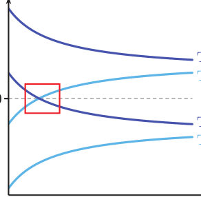
<figcaption class="paper-figure-caption"><b>Fig 1.</b> Figure 1: (a) Schematic of a reaction pathway with reactant (R), transition state (TS), and product (P) (black line), with the activation energy ∆G‡ = ETS −ER and reaction energy ∆Grxn = EP −ER. Field-modified reaction pathways are shown for Bell– Evans–Polanyi (BEP) behavior with m &gt; 0 (dark blue) and Opposite-BEP behavior with m &lt; 0 (light blue). (b) Schematic of the four reaction types in a cavity: Type I (dark blue) remains at m &gt; 0, Type IV (light blue) remains at m &lt; 0, while Type II (light blue) and Type III (dark blue) cross m = 0 upon tun- ing the cavity frequency ω, switching between BEP and Opposite-BEP behavior.</figcaption>
</figure>
<figure class="paper-figure-card">
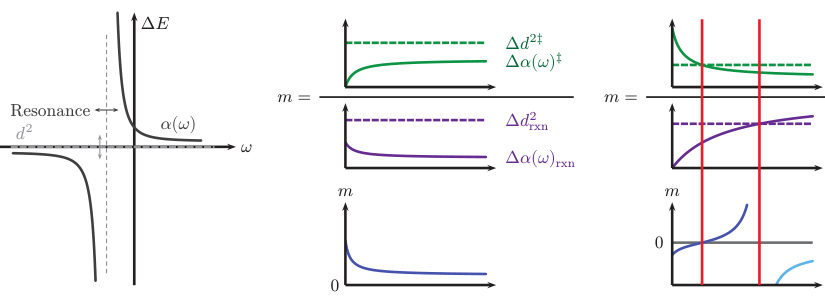
<figcaption class="paper-figure-caption"><b>Fig 2.</b> Figure 2: Analytical structure of the cavity-modified LFER prefactor m. (a) Schematic decom- position of the cavity-induced energy shift into a frequency-independent permanent-dipole contribution, d2 (light gray), which sets the vertical offset, and a frequency-dependent polarizability contribution, α(ω) (dark gray), which gives rise to the characteristic pole-like 1/x structure. (b) Schematic numerator (top, green) and denominator (middle, purple) contributions entering m in the absence of a response crossing. The dashed lines indicate the permanent-dipole contributions, while the solid lines show the correspond- ing frequency-dependent polarizability contributions. Since neither...</figcaption>
</figure>
<figure class="paper-figure-card">
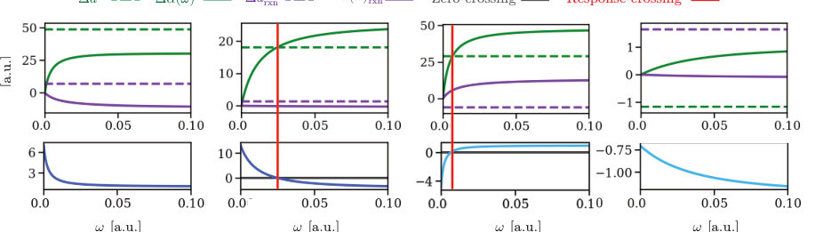
<figcaption class="paper-figure-caption"><b>Fig 3.</b> Figure 3: Exploring reaction types in the cavity-modified Shin–Metiu model. (a) Cavity-free ground-state Born–Oppenheimer energy surfaces for the four different parameter sets considered. R, TS, and P denote the reactant, transition state, and product, respectively. (b) Top panels: numerator (green) and denominator (purple) contributions entering m for the four reaction types, shown as a function of cavity frequency. The corresponding permanent-dipole contributions are shown as dashed lines and the polarizability contributions as solid lines. Bottom panels: resulting m as a function of cavity frequency. The gray horizontal lines indicate zero-crossings of m, while the red vertical lines...</figcaption>
</figure>
<figure class="paper-figure-card">
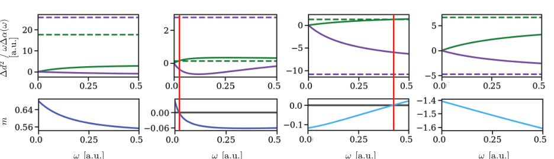
<figcaption class="paper-figure-caption"><b>Fig 4.</b> Figure 4: Exploring reaction types in cavity-modified reactions from ab initio calculations. (a) Cavity-free reaction pathways for the four reactions considered: the Type I Menshutkin reaction, Type II radical abstraction reaction, Type III dehalogenation step of the Ullmann coupling reaction, and Type IV alcoholysis reaction. R, TS, and P denote the reactant, transition state, and product, respectively. (b) Top panels: numerator (green) and denominator (purple) contributions entering m for each reaction, shown as a function of cavity frequency. The corresponding permanent-dipole contributions are shown as dashed lines and the polarizability contributions as solid lines. Bottom panels:...</figcaption>
</figure>
</div>
<p><strong>Summary.</strong> This paper develops a classification scheme for chemical reactions occurring within optical cavities by extending linear free-energy relationships. By analyzing the cavity-modified reaction prefactor, the authors categorize reactions into four types based on how their behavior (BEP or Opposite-BEP) changes as the cavity frequency is tuned. This provides a predictive tool for understanding cavity-controlled chemical reactivity.</p>
<p><strong>Why it may be interesting.</strong> This work provides a powerful, general framework for predicting chemical reactivity in structured light environments, linking macroscopic concepts like reaction type to fundamental molecular electronic properties (dipole/polarizability) and cavity tuning.</p>
<details>
<summary>Detailed structure</summary>
<p><strong>Main problem.</strong> The paper addresses how chemical reaction rates are modified and characterized when occurring inside optical cavities, moving beyond general debates in polaritonic chemistry.</p>
<p><strong>Main result.</strong> Reactions are classified into four distinct types based on how the cavity-modified linear free-energy relationship prefactor behaves as the cavity frequency is tuned. This classification predicts whether the reaction follows conventional (BEP) or counterintuitive (Opposite-BEP) behavior, or switches between them.</p>
<p><strong>Method.</strong> The authors extend nonempirical Linear Free-Energy Relationships (LFERs) by deriving an analytical expression for the reaction prefactor, which depends on the permanent-dipole and polarizability responses of the molecules.</p>
<p><strong>Model / system.</strong> The system involves molecular reactions (tested on Shin Metiu model and four ab-initio examples) coupled to an optical cavity. The analysis focuses on the frequency dependence of the coupling via the polarizability $\alpha(\omega)$.</p>
<p><strong>Key observables.</strong> The LFER prefactor ($m$), which determines the reaction type (BEP vs. Opposite-BEP), and the dependence of $m$ on the cavity frequency ($\omega$).</p>
<p><strong>Important parameters / regimes.</strong> Cavity frequency ($\omega$), permanent-dipole moments ($\mu$), and frequency-dependent polarizabilities ($\alpha(\omega)$).</p>
<p><strong>Assumptions / limitations.</strong> The analysis is coarse-grained, approximating free energy changes by neglecting entropic and thermal contributions, and assuming the coupling is weak enough that the reaction pathway is not fundamentally altered by the cavity.</p>
<p><strong>Figures summary.</strong> Figures illustrate the four reaction types (I-IV) based on the sign and crossing behavior of the prefactor $m$ versus $\omega$, and show the dipole and polarizability contributions leading to $m$ for specific molecular examples.</p>
<p><strong>Paper structure.</strong> The paper first establishes the theoretical framework by extending LFERs to cavities. It then analytically derives the prefactor $m$ based on molecular responses. The core of the work is the classification into four types based on response-crossing rules, which is demonstrated using both a simplified model (Shin Metiu) and rigorous ab-initio calculations on representative chemical reactions.</p>
</details>
<details>
<summary>Abstract</summary>
<p>Polaritonic chemistry holds the promise of controlling chemical reactivity through confined light-matter interactions, yet how reactions respond inside optical cavities remains debated. Here, we take a more zoomed-out view, inspired by electrostatic catalysis. We extend nonempirical linear free-energy relationships to cavity-modified reactions and show that their behavior falls into four distinct reaction types set by simple response-crossing rules. Reactions can follow conventional Bell-Evans-Polanyi (BEP) or counterintuitive Opposite-BEP behavior regardless of cavity tuning, or switch between the two as the cavity frequency is varied. We establish this picture analytically and demonstrate it in the Shin Metiu model and in four molecular reactions treated with ab initio electronic-structure methods. Even at this deliberately coarse-grained level, cavity-modified reactivity already shows qualitatively different and strongly counterintuitive behavior, including reactions that switch character with cavity frequency. Yet this complexity can still be reduced to a simple competition between permanent-dipole and polarizability responses. This reaction-type classification therefore provides a new route to organize and anticipate cavity-modified reactivity.</p>
</details>
<p><sub><a href="#top">↑ back to top</a></sub></p>

<p><a id="paper-2610.40585"></a></p>
<h3 id="classical-communication-over-quantum-channels-does-entanglement-help-in-nature"><a href="http://arxiv.org/abs/2610.40585v1">Classical communication over quantum channels: does entanglement help in nature?</a></h3>
<p><strong>Authors:</strong> Peixue Wu<br>
<strong>Type:</strong> theory · <strong>Category:</strong> quantum information and computing · <strong>PDF:</strong> <a href="https://arxiv.org/pdf/2610.40585v1">https://arxiv.org/pdf/2610.40585v1</a><br>
<strong>Analysis basis:</strong> full PDF text, analyzed in chunks</p>
<div class="figure-strip-hint">↔ Scroll figures horizontally</div>
<div class="paper-figures-scroll">
<figure class="paper-figure-card">
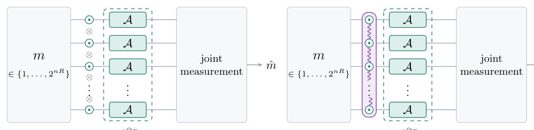
<figcaption class="paper-figure-caption"><b>Fig 1.</b> Fig. 1 Two ways to send a message m ∈{1, . . . , 2nR} over n uses of a channel A. (a) Each codeword is a product state across the channel uses; the optimal rate is the Holevo information χmax(A) in (1.1). (b) Codewords may be entangled across the channel uses; the optimal rate is the classical capacity C(A) in (1.2). In both cases Bob decodes with a joint measurement of all n outputs.</figcaption>
</figure>
</div>
<p><strong>Summary.</strong> This paper tackles the quantum additivity problem by determining if entanglement can boost classical communication rates over quantum channels. Using a novel Schur-weighted block entropy inequality, the authors prove that for important physical classes of channels, such as phase-covariant channels, no entanglement advantage exists. This result confirms that additivity holds for many physically relevant scenarios.</p>
<p><strong>Why it may be interesting.</strong> It provides rigorous mathematical proofs concerning the fundamental limits of classical communication over quantum channels, which underpins the theoretical understanding of quantum communication protocols.</p>
<details>
<summary>Detailed structure</summary>
<p><strong>Main problem.</strong> The paper investigates whether using entangled codewords across multiple independent uses of a quantum channel can improve the achievable rate of classical communication compared to using product states (the quantum additivity problem).</p>
<p><strong>Main result.</strong> The authors prove that there is no entanglement advantage for all phase-covariant channels, including multi-level amplitude damping and generalized dephasing channels, recovering the result for all qubit channels.</p>
<p><strong>Method.</strong> The core method involves establishing a general Schur-weighted block entropy inequality, which is then used to prove the additivity property for specific classes of quantum channels.</p>
<p><strong>Model / system.</strong> The study analyzes general quantum channels $A: \mathcal{A} 	o \mathcal{B}$ acting on quantum systems, with specific focus on phase-covariant channels and qubit channels ($\mathcal{M}_2 	o \mathcal{M}_2$).</p>
<p><strong>Key observables.</strong> Classical capacity $C(A)$, Holevo information $\chi_{\max}(A)$, and Von Neumann entropy $S(
ho)$.</p>
<p><strong>Important parameters / regimes.</strong> The dimensionality of the system ($d$), and the structure of the channel (e.g., phase-covariance).</p>
<p><strong>Assumptions / limitations.</strong> The analysis relies on establishing strong entropy inequalities and assumes the channel belongs to the class of phase-covariant channels.</p>
<p><strong>Figures summary.</strong> Figure 1 illustrates the comparison between the rate achievable with product codewords ($\chi_{\max}(A)$) versus entangled codewords ($C(A)$) over multiple uses of a channel.</p>
<p><strong>Paper structure.</strong> The paper introduces the additivity problem, develops the Schur-weighted block entropy inequality, and then applies this inequality to prove strong additivity for phase-covariant channels, concluding with the recovery of the result for qubit channels.</p>
</details>
<details>
<summary>Abstract</summary>
<p>Can entangling codewords across independent uses of a quantum channel improve the rate of classical communication? An old conjecture states that there is no such entanglement advantage for all channels. Although Hastings's result and follow-up works disproved this conjecture, it turns out that enormous dimension is required to construct a channel where entanglement enhances classical communication. This indicates that there might be no entanglement advantage for many physical channels, or for all low dimensional channels. Motivated by recent progress on (generalized) amplitude damping channels, we propose a general Schur-weighted block entropy inequality, and show that there is no entanglement advantage for all phase-covariant channels including multi-level amplitude damping channels, generalized dephasing channels, and damping-dephasing channels. As a by-product, we also recover the recently established result that there is no entanglement advantage for all qubit channels.</p>
</details>
<p><sub><a href="#top">↑ back to top</a></sub></p>

<p><a id="paper-2610.40170"></a></p>
<h3 id="coexistence-of-superconductivity-and-chern-insulators-with-c-math1463math-in-twisted-rhombohedral-bilayer-trilayer-graphene"><a href="http://arxiv.org/abs/2610.40170v1">Coexistence of Superconductivity and Chern insulators with |C| $\geq 1$ in twisted rhombohedral bilayer-trilayer graphene</a></h3>
<p><strong>Authors:</strong> Qiu Yang, Zihao Huo, Le Liu, Tianqi Song, Fankun Wang, Jingwei Dong, Kenji Watanabe, Takashi Taniguchi, Weibo Gao, Xiaobo Lu, Guangyu Zhang, Wei Yang<br>
<strong>Type:</strong> experiment · <strong>Category:</strong> strongly correlated electrons · <strong>PDF:</strong> <a href="https://arxiv.org/pdf/2610.40170v1">https://arxiv.org/pdf/2610.40170v1</a><br>
<strong>Analysis basis:</strong> full PDF text, analyzed in chunks</p>
<div class="figure-strip-hint">↔ Scroll figures horizontally</div>
<div class="paper-figures-scroll">
<figure class="paper-figure-card">
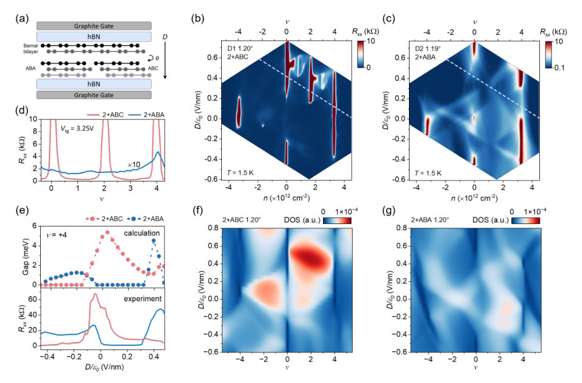
<figcaption class="paper-figure-caption"><b>Fig 1.</b> FIG. 1. Stacking-dependent transport in twisted bilayer-trilayer graphene. (a) Schematic of the dual‑gate device, showing a twisted stack of a Bernal bilayer and an ABA- or ABC-stacked trilayer. These structures are labeled 2+ABA and 2+ABC, respectively. Positive displacement field D points from the top gate toward the bottom gate. (b), (c) Maps of the longitudinal resistance Rxx versus carrier density n and D/ε0 at T = 1.5K of D1 (2+ABC, θ = 1.20°) and D2 (2+ABA, θ = 1.19°), respectively, where ε0 is the vacuum permittivity. The moiré filling factor ν is indicated on the top axes. Panel (c) uses a logarithmic color scale. (d) Rxx along the white dashed trajectories in (b) and (c) at...</figcaption>
</figure>
<figure class="paper-figure-card">
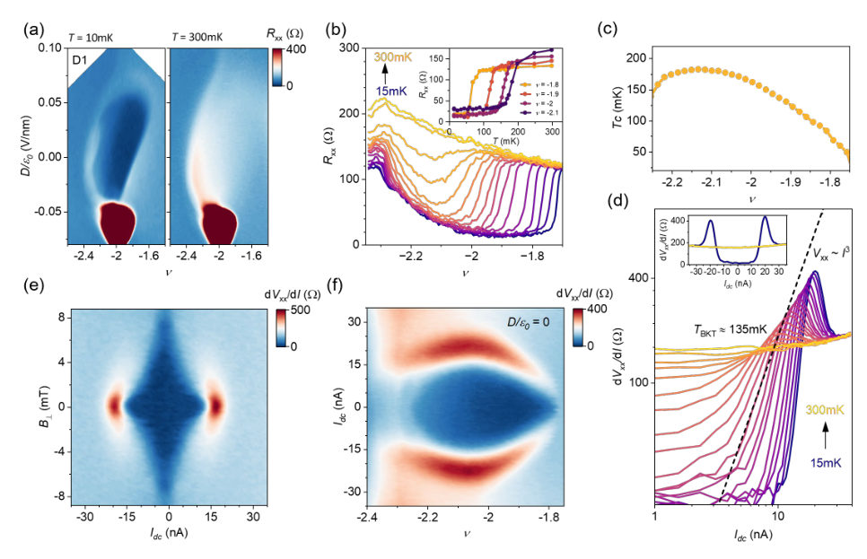
<figcaption class="paper-figure-caption"><b>Fig 2.</b> FIG. 2. Superconducting pocket near ν = -2 in device D1 (2+ABC, θ = 1.20°). (a) Maps of Rxx versus ν and D/ε0 at T = 10 mK (left) and 300 mK (right). (b) Rxx versus ν along Vbg = -1 V for T = 15-300 mK. Inset: extracted Rxx (T) at selected ν. (c) Critical temperatures Tc extracted from (b), defined by Rxx (Tc) = 0.5 RN, where RN is the normal-state resistance measured above the critical temperature. (d) dVxx/dI versus Idc on logarithmic axes for T = 15-300 mK. The dashed line indicates dVxx/dI ∝ Idc2, corresponding to Vxx ∝ Idc3. The fitted Berezinskii–Kosterlitz–Thouless (BKT) transition temperature is TBKT ≈ 135 mK. Inset: dVxx/dI versus Idc at T = 15 and 300mK, respectively. (e) dVxx/dI...</figcaption>
</figure>
<figure class="paper-figure-card">
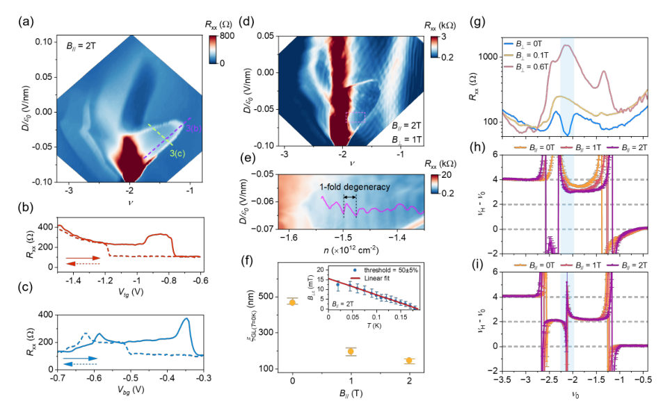
<figcaption class="paper-figure-caption"><b>Fig 3.</b> FIG. 3. Evolution of superconducting and metallic states with in-plane magnetic field in device D1. (a) Maps of Rxx versus ν and D/ε0 near ν = -2 at in-plane magnetic field B// = 2T. (b), (c) Hysteresis of Rxx near the phase boundary of the quarter-metal (QM) state. The loops are measured by sweeping in the top-gate voltage Vtg at fixed Vbg = -0.415V and the bottom-gate voltage Vbg at fixed Vtg = -1.08V, marked by dashed lines in (a). Arrows indicate the sweep directions. (d) Maps of Rxx versus ν and D/ε0 at B// = 2T and B⊥ = 1T. (e) Enlarged maps of the boxed region in (d). pink lines show representative oscillation traces after background subtraction, with periods consistent with one-fold...</figcaption>
</figure>
<figure class="paper-figure-card">
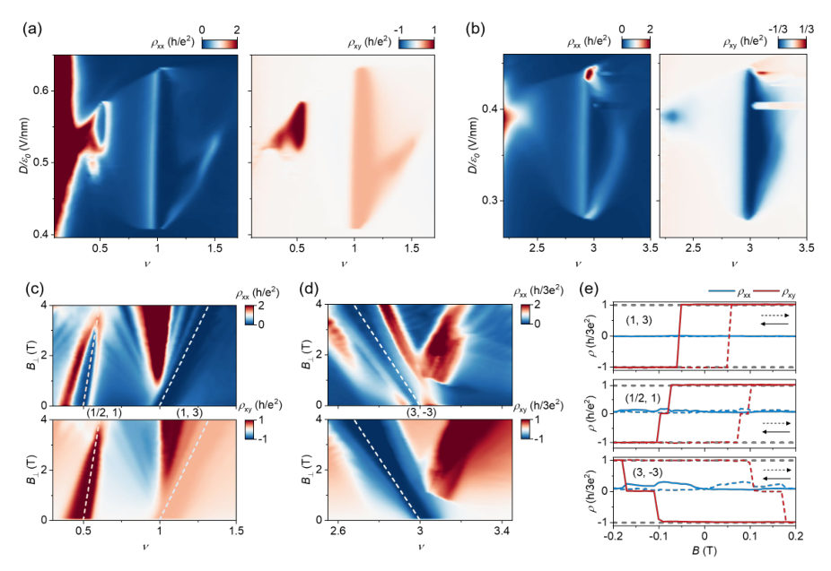
<figcaption class="paper-figure-caption"><b>Fig 4.</b> FIG. 4. Quantum anomalous Hall states on the electron-doped side in device D1. The longitudinal/Hall resistivity is symmetrized/antisymmetrized, respectively (Method). (a), (b) Maps of longitudinal resistivity ρxx (left) and Hall resistivity ρxy (right) versus ν and D, measured at B⊥ = ±0.2T near ν = 1/2 and 1 in (a) and near ν =3 in (b). (c), (d) Landau fan diagrams of ρxx (top) and ρxy (bottom) at D/𝜀𝜀0 = 0.554V/nm near ν = 1/2 and 1 in (c) and at D/𝜀𝜀0 = 0.297V/nm near ν = 3 in (d). Dashed lines are following the Streda’s formula (∂n/∂B⊥ = C·e/h) and labeled as (ν0, C), where ν0 is the zero-field moiré filling factor and C is the Chern number. (e) Magnetic hysteresis of ρxx (blue) and...</figcaption>
</figure>
</div>
<p><strong>Summary.</strong> This work reports the observation of superconductivity coexisting with high-Chern-number Chern insulators in twisted rhombohedral graphene moiré superlattices. By using low-temperature transport measurements, the authors map out the phase diagram, demonstrating that the system can host both unconventional superconductivity and robust topological insulating states simultaneously. This establishes the material as a tunable platform for studying the interplay between superconductivity and topology.</p>
<p><strong>Why it may be interesting.</strong> The interplay between unconventional superconductivity and topological order (Chern insulators) is a major frontier in condensed matter physics, providing a clean platform to study emergent quantum phenomena.</p>
<details>
<summary>Detailed structure</summary>
<p><strong>Main problem.</strong> The study investigates the coexistence and competition between superconductivity and topological phases, specifically Chern insulators, in a moiré superlattice system.</p>
<p><strong>Main result.</strong> The authors successfully observed the coexistence of superconductivity (with $T_c \approx 180$ mK) and integer Chern insulators ($C=\pm 1, 3$) in twisted rhombohedral graphene multilayers.</p>
<p><strong>Method.</strong> The research employed low-temperature transport measurements, including nonlinear I-V curves, quantum oscillation analysis (Landau fan), and Ginzburg-Landau fitting to characterize the superconducting and topological states.</p>
<p><strong>Model / system.</strong> The physical platform is a twisted rhombohedral bilayer-trilayer graphene moiré superlattice, whose electronic properties are tuned by gate voltages (displacement field $D$) and applied in-plane magnetic fields ($B_{//}$).</p>
<p><strong>Key observables.</strong> Superconducting critical temperature ($T_c$), BKT transition temperature, Chern numbers ($C$), coherence length ($\xi_{GL}$), and quantized Hall conductance ($
ho_{xy}$).</p>
<p><strong>Important parameters / regimes.</strong> Twist angle ($  heta \approx 1.20^\circ$), in-plane magnetic field ($B_{//}$ up to 2 T), and moiré filling factor ($
u$).</p>
<p><strong>Assumptions / limitations.</strong> The analysis relies on continuum models and fitting the transport data to established theories like Ginzburg-Landau theory for coherence length.</p>
<p><strong>Figures summary.</strong> Figures map out the phase diagrams showing SC pockets bordering correlated insulating regions, and Landau fan diagrams confirm quantized Hall plateaus corresponding to specific Chern numbers.</p>
<p><strong>Paper structure.</strong> The paper systematically maps the phase space by varying filling factor and magnetic fields, first establishing SC signatures, then confirming CI states via quantization, and finally demonstrating the competition/coexistence between these two orders.</p>
</details>
<details>
<summary>Abstract</summary>
<p>Rhombohedral multilayer graphene (RMG) has been demonstrated as a promising platform for investigating strongly correlated phases of matter. Here, we observe a coexistence of superconductivity and Chern insulators in a twisted rhombohedral bilayer-trilayer graphene moiré superlattice. Superconductivity, evidenced by a sharp transition with a critical temperature of ~180 mK, nonlinear I-V with a BKT temperature of 135 mK, and a signature of phase-sensitive interference patterns, emerges from a symmetry-breaking Fermi surface near v = -2 and D = 0, and it survives at a large in-plane magnetic field up to 2 T, strongly deviating from the Pauli limit. Moreover, we observe a strong modulation of the Ginzburg-Landau coherence length from 467 nm to 145 nm as the in-plane magnetic field increases from 0 to 2 T, whereas the critical current Ic barely changes. Unlike previous studies in RMG, we observe a competition between superconductivity and a correlated insulator at v = -2, monitored by displacement fields and twist angles. Note that we also observe integer Chern insulators with C = 1, 3, and -3 at v = 1/2, 1, and 3, respectively, for large D &gt; 0 in the same superconducting device. The observations establish twisted rhombohedral graphene multilayers as a fascinating system to investigate unconventional superconductivity, high Chern number topology, and their interplay.</p>
</details>
<p><sub><a href="#top">↑ back to top</a></sub></p>

<p><a id="paper-2610.38966"></a></p>
<h3 id="coexistence-of-superconductivity-and-magnetic-order-in-bafemath1472mathsmath1473math-evidence-for-orbital-selective-delocalization"><a href="http://arxiv.org/abs/2610.38966v1">Coexistence of superconductivity and magnetic order in BaFe$_2$S$_3$: evidence for orbital-selective delocalization</a></h3>
<p><strong>Authors:</strong> Y. Oubaid, N. S. Dhami, P. Fertey, C. V. Colin, C. Ritter, A. Forget, D. Bounoua, J. -P. Rueff, M. Verseils, P. Foury-Leylekian, V. Balédent<br>
<strong>Type:</strong> experiment · <strong>Category:</strong> strongly correlated electrons · <strong>PDF:</strong> <a href="https://arxiv.org/pdf/2610.38966v1">https://arxiv.org/pdf/2610.38966v1</a><br>
<strong>Analysis basis:</strong> full PDF text, analyzed in chunks</p>
<div class="figure-strip-hint">↔ Scroll figures horizontally</div>
<div class="paper-figures-scroll">
<figure class="paper-figure-card">
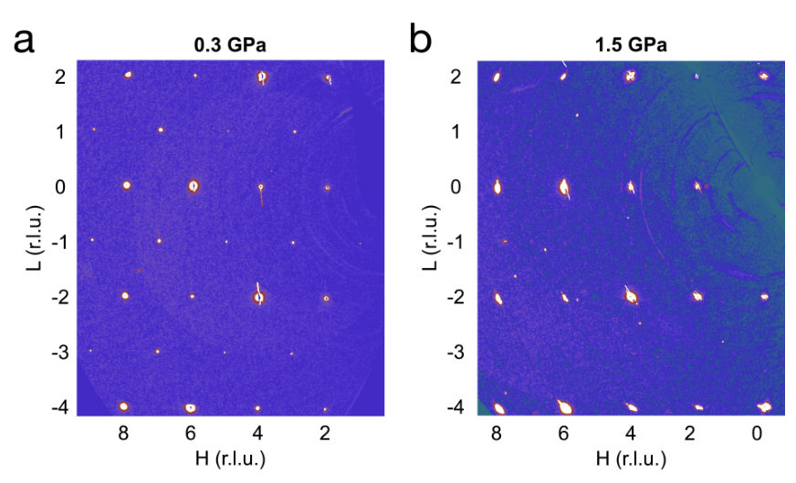
<figcaption class="paper-figure-caption"><b>Fig 1.</b> Figure 1. Structural transition under pressure. Reconstruction of the reciprocal plane (H0L) at 15 K under (a) 0.3 GPa and (b) 1.5 GPa. At 0.3 GPa, Bragg reflections breaking the extinction conditions of the C centering (h+k ̸= 2n) expected in the Cmcm space group are present at odd H values (for K = 0), and are absent at 1.5 GPa.</figcaption>
</figure>
<figure class="paper-figure-card">
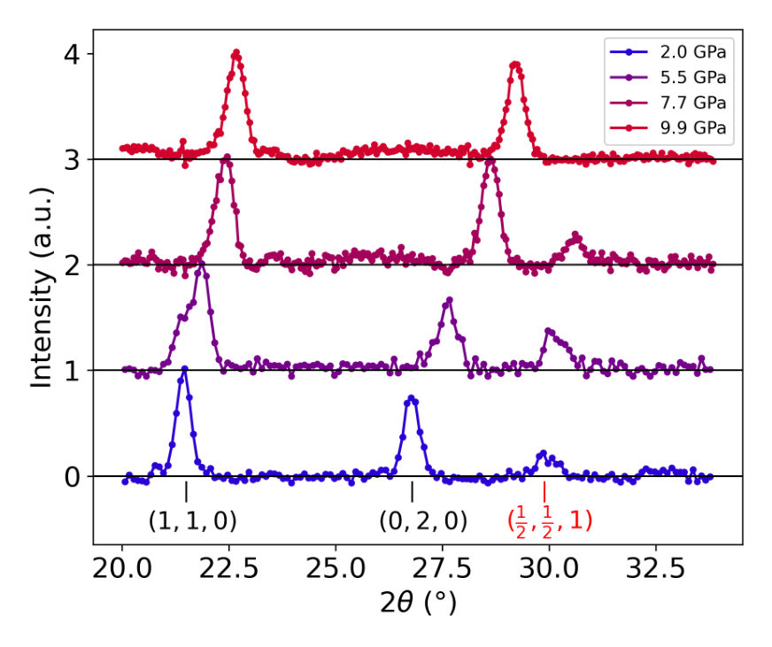
<figcaption class="paper-figure-caption"><b>Fig 2.</b> Figure 2. Neutron diffraction under pressure. Powder neutron diffraction patterns of BaFe2S3 collected at 10 K (20 K for 2 and 5.5 GPa) under applied pressures ranging from 2 to 9.9 GPa. Only low-angle reflections are shown, labelled with their Miller indices (hkl). Patterns collected at 2 and 5.5 GPa were measured on the D1B diffractometer (λ = 2.52 Å), whereas those at 7.7 and 9.9 GPa were measured on D20 (λ = 2.42 Å). All patterns are rescaled to a common wavelength of 2.52 Å to facilitate comparison. Background has been subtracted and patterns are vertically offset for clarity.</figcaption>
</figure>
<figure class="paper-figure-card">
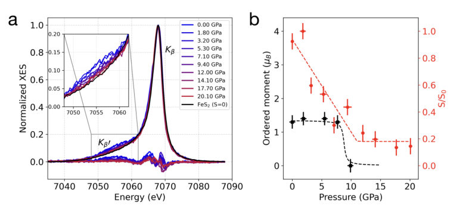
<figcaption class="paper-figure-caption"><b>Fig 3.</b> Figure 3. Decoupling of local and ordered magnetic moments. (a) X-ray emission spectra (XES) of the Fe Kβ line at 300 K for BaFe2S3 and FeS2 (S = 0 reference) at various pressures. The inset shows a magnification of the Kβ ′ satellite region at ∼7055 eV. (b) Pressure dependence of the Fe ordered magnetic moment from powder neutron diffraction (PND) below 20 K (black squares, left axis); error bars represent refinement uncertainty. Red circles (right axis) show the local spin S at 300 K, extracted via integrated absolute difference (IAD) analysis and normalized to the ambient-pressure value S0. Error bars are derived from photon statistics within the 7050–7060 eV window. Dashed lines are...</figcaption>
</figure>
<figure class="paper-figure-card">
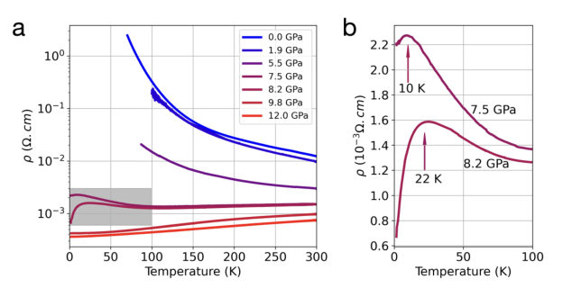
<figcaption class="paper-figure-caption"><b>Fig 4.</b> Figure 4. Electrical resistivity under pressure. (a) Temperature dependence of the resistivity of BaFe2S3 from ambient pressure to 12 GPa. The evolution from insulating-like to metallic transport is clearly observed. (b) Enlarged view of the region at 7.5 and 8.2 GPa. Arrows indicate the onset of superconductivity at approximately 10 K and 22 K, respectively.</figcaption>
</figure>
</div>
<p><strong>Summary.</strong> This work investigates the interplay between superconductivity and magnetism in BaFe2S3 under high pressure using multiple techniques. Key findings show that the long-range magnetic order remains robust even as the local magnetic moment collapses. This suggests that superconductivity arises from an orbital-selective delocalization mechanism, where only specific electronic orbitals contribute to the itinerant superconducting state.</p>
<p><strong>Why it may be interesting.</strong> The concept of orbital-selective physics, where different electronic degrees of freedom respond differently to external tuning (like pressure), is highly relevant to understanding emergent quantum phases in strongly correlated materials.</p>
<details>
<summary>Detailed structure</summary>
<p><strong>Main problem.</strong> The central challenge is understanding how superconductivity emerges from correlated electronic states, specifically investigating the interplay between superconductivity and magnetic order in a system lacking a 2D square lattice.</p>
<p><strong>Main result.</strong> The study reveals a striking decoupling where long-range magnetic order persists while the local magnetic moment is suppressed, suggesting an orbital-selective mechanism.</p>
<p><strong>Method.</strong> The research combines high-pressure x-ray and neutron diffraction, X-ray emission spectroscopy (XES), and electrical transport measurements.</p>
<p><strong>Model / system.</strong> The physical system is the quasi-one-dimensional spin-ladder compound BaFe2S3, which is studied across structural, magnetic, and electronic transitions under high pressure.</p>
<p><strong>Key observables.</strong> Long-range ordered moment (neutron diffraction), local magnetic moment (XES), structural symmetry, and superconducting critical temperature (transport).</p>
<p><strong>Important parameters / regimes.</strong> Pressure (up to 12-16.5 GPa), temperature (low T for transport), and the magnetic moment values ($\mu_B$).</p>
<p><strong>Assumptions / limitations.</strong> The interpretation relies on the 'orbital-selective mechanism' to explain the decoupling observed between the local moment and the long-range order.</p>
<p><strong>Figures summary.</strong> Figures track structural transitions, the persistence of the stripe-type AFM structure up to high pressure, the continuous suppression of the local magnetic moment via XES, and the emergence of superconductivity in the normal state.</p>
<p><strong>Paper structure.</strong> The paper systematically combines structural characterization (X-ray/Neutron) to map the phase diagram, magnetic measurements (Neutron/XES) to quantify magnetic order, and transport measurements (Resistivity) to locate the superconducting dome, culminating in the orbital-selective interpretation.</p>
</details>
<details>
<summary>Abstract</summary>
<p>Understanding how superconductivity emerges from correlated electronic states is a central challenge in condensed matter physics. The quasi-one-dimensional spin-ladder compound \bfs\ serves as a unique platform to study this interplay, as it lacks the two-dimensional square lattice characteristic of most iron-based superconductors. Here, we combine high-pressure x-ray and neutron diffraction, x-ray emission spectroscopy, and electrical transport to map its structural, magnetic, and electronic evolution into the superconducting regime. We \revised{observe} a striking pressure-induced decoupling: while the long-range stripe-type antiferromagnetic order remains remarkably robust under pressure up to the onset of superconductivity, the local iron magnetic moment is suppressed by nearly 80\%. This dichotomy \revised{points to an orbital-selective mechanism}, where specific Fe $3d$ electrons remain localized to sustain magnetism while others delocalize to form the itinerant and superconducting state. \revised{Superconductivity emerges while long-range magnetic order is still present, revealing that the two coexist in \bfs, which we attribute to} the selective response of multiorbital electronic degrees of freedom.</p>
</details>
<p><sub><a href="#top">↑ back to top</a></sub></p>

<p><a id="paper-2610.39218"></a></p>
<h3 id="colossal-magnetoresistance-in-narrow-gap-magnetic-semiconductor-eumath1476mathcdasmath1477math"><a href="http://arxiv.org/abs/2610.39218v1">Colossal magnetoresistance in narrow-gap magnetic semiconductor Eu$_2$CdAs$_2$</a></h3>
<p><strong>Authors:</strong> Zhiyu Zhou, Zhi-Cheng Wang, Xiyu Chen, Xin-Yu Zhao, Yaran Duan, Shiran Tao, Guang-Han Cao, Shuai Dong<br>
<strong>Type:</strong> experiment · <strong>Category:</strong> strongly correlated electrons · <strong>PDF:</strong> <a href="https://arxiv.org/pdf/2610.39218v1">https://arxiv.org/pdf/2610.39218v1</a><br>
<strong>Analysis basis:</strong> full PDF text, analyzed in chunks</p>
<div class="figure-strip-hint">↔ Scroll figures horizontally</div>
<div class="paper-figures-scroll">
<figure class="paper-figure-card">
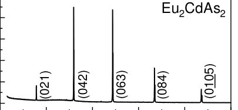
<figcaption class="paper-figure-caption"><b>Fig 1.</b> FIG. 1. Crystal structure and morphology of Eu2CdAs2. (a) Combined polyhedral and ball-and-stick representation of the structure viewed along the crystallographic a-axis. The CdAs4 tetrahedra are highlighted in light yellow. Eu, Cd, and As atoms are represented by pink, blue, and green spheres, respectively. (b) Structural details of the [CdAs2]4−sheets in Eu2CdAs2, viewed along the b-axis. (c) Scanning electron microscopy (SEM) micrograph of a representative Eu2CdAs2 single crystal. (d) XRD pattern (θ−2θ scan) of the Eu2CdAs2 single crystal showing exclusively the (021) family of peaks. The peaks adjacent to the main diffraction peaks are the Kα2 reflections.</figcaption>
</figure>
<figure class="paper-figure-card">
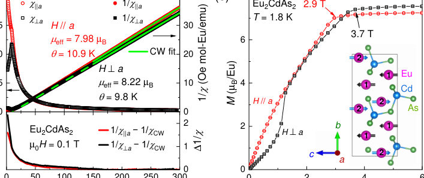
<figcaption class="paper-figure-caption"><b>Fig 2.</b> FIG. 2. Magnetic phase transition of Eu2CdAs2. (a) Temperature dependence of the magnetic susceptibility χ(T) (left axis of upper panel) measured in an applied field of 0.1 T, and the corresponding Curie-Weiss analysis (right axis of upper panel). Open red circles and open black squares represent data for H ∥a and H ⊥a, respectively. The green lines show the Curie-Weiss fit to the inverse susceptibility. The lower panel shows deviations of the 1/χ data from the linear fit. (b) Enlarged view of the χ(T) curves highlighting the magnetic transition at 9 K. The inset compares zero-field-cooling (ZFC, red) and field-cooling (FC, blue) data collected at 5 mT. (c) Field-dependent magnetization...</figcaption>
</figure>
<figure class="paper-figure-card">
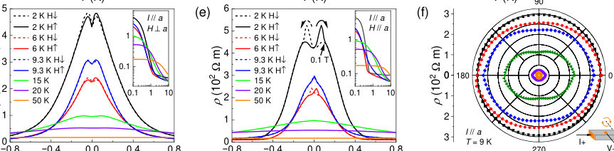
<figcaption class="paper-figure-caption"><b>Fig 3.</b> FIG. 3. Magnetotransport properties of Eu2CdAs2. (a) Temperature dependence of the zero-field resistivity ρ(T) with current I ∥a. The inset shows Arrhenius-type linear fits of ln σ vs. 1000/T performed in the high-temperature range (&gt; 250 K) and low-temperature range (10–20 K), respectively. (b) ρ(T) curves under various magnetic fields applied perpendicular to the a-axis (H ⊥a), with I ∥a. (c) MR as a function of temperature for H ⊥a (left panel) and H ∥a (right panel). (d,e) Field-dependent resistivity ρ(H) at selected temperatures from 2 to 50 K for (d) H ⊥a and (e) H ∥a. (f) Angular dependence of the resistivity at various magnetic fields, exhibiting modest anisotropy. The angles 0◦and...</figcaption>
</figure>
<figure class="paper-figure-card">
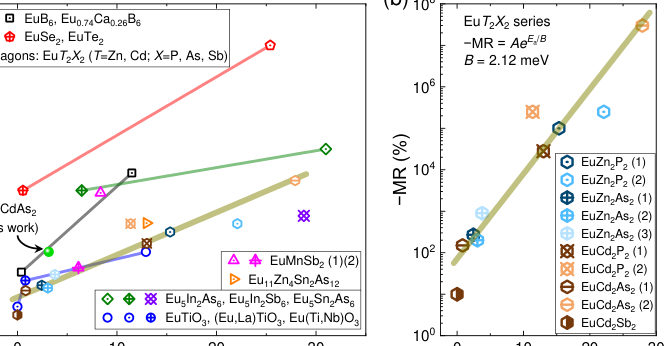
<figcaption class="paper-figure-caption"><b>Fig 4.</b> FIG. 4. (a) Maximum −MR of various Eu-containing Zintl compounds (data from single-crystal samples) plotted against their respective low-temperature activation energy. The −MR values are presented on a logarithmic scale. Data points belonging to the same structural family are connected by lines, except for the EuT2X2 series. Different symbol colors are used for Eu5Sn2As6 and Eu5In2(As, Sb)6 to reflect their structural difference. (b) Exponential fit illustrating the relationship between −MR and the activation energy for the EuT2X2 (T = Cd, Zn; X = P, As, Sb) series. The brown line represents the linear fit for the data points. All data were compiled from the literature and standardized...</figcaption>
</figure>
</div>
<p><strong>Summary.</strong> This work reports on the synthesis and characterization of $   ext{Eu}_2   ext{CdAs}_2$, a narrow-gap magnetic semiconductor exhibiting a large colossal magnetoresistance (CMR) effect. The research confirms an AFM ground state and establishes a crucial, nearly exponential correlation between the maximum CMR magnitude and the material's low-temperature bandgap. This suggests that bandgap engineering is a powerful tool for rationally designing magnetic transport properties in Zintl phases.</p>
<p><strong>Why it may be interesting.</strong> The study links electronic transport (bandgap engineering) directly to magnetic phenomena (CMR) in a strongly correlated system, providing a clear, tunable mechanism for controlling magnetic responses via material design.</p>
<details>
<summary>Detailed structure</summary>
<p><strong>Main problem.</strong> The study addresses the challenge of discovering and understanding colossal magnetoresistance (CMR) effects, particularly in antiferromagnetic (AFM) materials, for spintronic applications.</p>
<p><strong>Main result.</strong> The material exhibits a large CMR effect (up to $-10^4\%$) below its AFM ordering temperature, and a systematic correlation was found linking the maximum CMR magnitude to the material's low-temperature activation energy.</p>
<p><strong>Method.</strong> The research involved synthesizing the compound, measuring its magnetic susceptibility and magnetization, and performing detailed magnetotransport measurements ($
ho(T, H)$) using a four-probe technique.</p>
<p><strong>Model / system.</strong> The physical system is the narrow-gap Zintl arsenide semiconductor $    ext{Eu}_2   ext{CdAs}_2$. It is characterized as an AFM material with semiconducting behavior, exhibiting complex magnetic ordering and transport anomalies.</p>
<p><strong>Key observables.</strong> AFM ordering temperature ($T_N = 9 	ext{ K}$), semiconducting activation energy ($E_a = 3.2 	ext{ meV}$), and the large negative magnetoresistance (CMR effect).</p>
<p><strong>Important parameters / regimes.</strong> Magnetic field ($H$) up to $9 	ext{ T}$, temperature ($T$) near $T_N$, and the ratio between CMR magnitude and $E_a$.</p>
<p><strong>Assumptions / limitations.</strong> The CMR effect is attributed to the dynamics of localized magnetic polarons or AFM domain dynamics, and the correlation suggests bandgap engineering is a viable design strategy.</p>
<p><strong>Figures summary.</strong> Figures illustrate the crystal structure, temperature dependence of magnetic susceptibility ($\chi(T)$), and magnetotransport properties ($
ho(T, H)$) showing the characteristic MR hysteresis.</p>
<p><strong>Paper structure.</strong> The paper follows a structure of synthesis and characterization, establishing the AFM ground state and semiconducting nature. It then details the magnetotransport measurements, revealing the CMR effect, and concludes with a systematic survey establishing a predictive correlation between bandgap engineering and CMR magnitude.</p>
</details>
<details>
<summary>Abstract</summary>
<p>Discovering antiferromagnetic materials with a sizable colossal magnetoresistance (CMR) effect and precisely tuning their responses remain significant challenges in materials science. This work reports the synthesis, phase transitions, and magnetotransport properties of the narrow-gap Zintl arsenide Eu$_2$CdAs$_2$. The compound undergoes antiferromagnetic ordering at $T_\mathrm{N} = 9$ K and exhibits semiconducting behavior with a low-temperature activation energy of 3.2 meV, achieving a large CMR effect of $-10^4\%$ at 9 T. Below $T_\mathrm{N}$, a distinct butterfly-shaped magnetoresistance hysteresis emerges without any macroscopic ferromagnetic order, revealing a transport anomaly likely dictated by AFM domain dynamics and/or the formation and percolation of localized magnetic polarons. Furthermore, a systematic survey of reported Eu-based Zintl phases uncovers a nearly exponential scaling trend between the maximum CMR magnitude and the low-temperature activation energy. This correlation demonstrates that bandgap engineering serves as an effective strategy for tailoring magnetotransport, establishing Eu-containing Zintl phases as a versatile platform for exploring and manipulating CMR effects.</p>
</details>
<p><sub><a href="#top">↑ back to top</a></sub></p>

<p><a id="paper-2610.39929"></a></p>
<h3 id="ensemble-dependent-effect-of-disorder-on-multicritical-points-in-a-system-with-long-range-interactions"><a href="http://arxiv.org/abs/2610.39929v1">Ensemble-dependent effect of disorder on multicritical points in a system with long-range interactions</a></h3>
<p><strong>Authors:</strong> Nir Schreiber, Reuven Cohen<br>
<strong>Type:</strong> theory · <strong>Category:</strong> statistical mechanics · <strong>PDF:</strong> <a href="https://arxiv.org/pdf/2610.39929v1">https://arxiv.org/pdf/2610.39929v1</a><br>
<strong>Analysis basis:</strong> full PDF text, analyzed in chunks</p>
<div class="figure-strip-hint">↔ Scroll figures horizontally</div>
<div class="paper-figures-scroll">
<figure class="paper-figure-card">
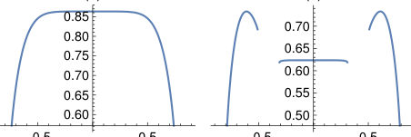
<figcaption class="paper-figure-caption"><b>Fig 1.</b> FIG. 1: Entropy versus magnetization in the invariant form for p = 0.5, associated with each of the two solutions of system Eq. (36). Panel (a) shows the physical solution x∗ 1, with energy ǫ∗ 1 = 0.1527...., and panel (b) shows the unphysical solution x∗ 2, with energy ǫ∗ 2 = 0.0788.... .</figcaption>
</figure>
<figure class="paper-figure-card">
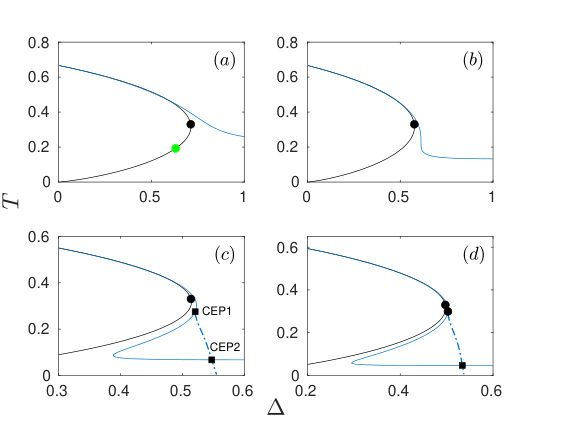
<figcaption class="paper-figure-caption"><b>Fig 2.</b> FIG. 2: Canonical (blue) and microcanonical (black) phase diagrams, together with the multicritical points, in the (∆, T ) plane for increasing p (decreasing disorder): (a) p = 0.65; (b) p = 0.8029; (c) p = 0.9; (d) p = 0.93. Solid lines represent continuous transitions, and dash-dotted lines mark discontinuous transitions. CTPs and MTPs are both denoted by black solid circles, and CEPs by solid squares. The green solid circle in (a) denotes the unphysical point x∗ 2.</figcaption>
</figure>
<figure class="paper-figure-card">
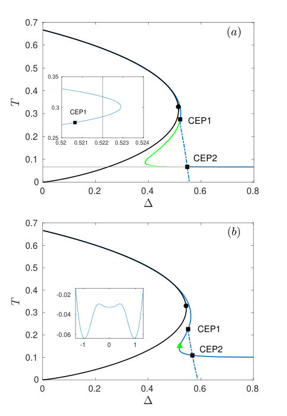
<figcaption class="paper-figure-caption"><b>Fig 3.</b> FIG. 3: Canonical (blue) and microcanonical (black) phase diagrams for different concentrations. The blue curves give the complete canonical transition picture, which consists of three parts: a continuous (solid) line that ends at CEP1, a discontinuous (dash-dotted) line, and another continuous line originating at CEP2. Solid circles denote MTPs, and solid squares mark the canonical CEPs. (a) p = 0.9. The green dotted line denotes the unphysical part from Fig. 2(c) that connects CEP1 and CEP2. The horizontal solid line shows the asymptotic behaviour given by Eq. (38). The inset shows a close-up of the neighbourhood of CEP1. Reentrance occurs along the vertical line ∆= 0.522. (b) p = 0.85....</figcaption>
</figure>
<figure class="paper-figure-card">
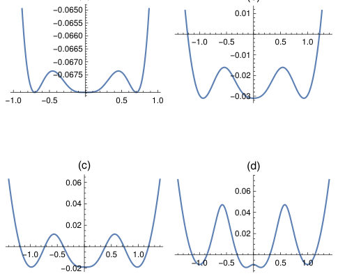
<figcaption class="paper-figure-caption"><b>Fig 4.</b> FIG. 5: Free energy as a function of magnetization at several points (∆, T ) along the dash-dotted line in Fig. 3(b) (p = 0.85): (a) CEP1 = (0.5519, 0.2262), where narrow minima at m ̸= 0 coexist with a broad minimum at m = 0; (b) (0.5616, 0.1511); (c) CEP2 = (0.5681, 0.1093), qualitatively similar to (a); (d) (0.5774, 0.0558). Note that in (d) the free energy has a local maximum at m = 0 and hence does not describe a discontinuous transition.</figcaption>
</figure>
<figure class="paper-figure-card">
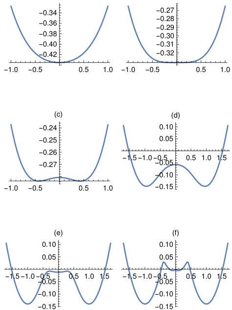
<figcaption class="paper-figure-caption"><b>Fig 5.</b> FIG. 4: Free energy as a function of magnetization for p = 0.9, ∆= 0.4, and decreasing temperatures: (a) T = 0.5884; (b) Tc = 0.4884, satisfying Eq. (17); (c) T = 0.4384; (d) T = 0.1884; (e) T = 0.0884, where the free energy has a local minimum at m = 0; (f) T = 0.0184, where two local minima appear at m ̸= 0.</figcaption>
</figure>
</div>
<p><strong>Summary.</strong> This theoretical paper analyzes the phase transitions in a disordered system with long-range interactions using the BEG model. It demonstrates a significant ensemble inequivalence, showing that the canonical and microcanonical descriptions predict different critical behaviors. The work provides detailed conditions for the existence of multicritical points based on the disorder strength.</p>
<p><strong>Why it may be interesting.</strong> The explicit comparison between canonical and microcanonical ensembles, especially regarding phase transitions and disorder effects, provides deep insight into the fundamental statistical mechanical definitions of equilibrium states, which is relevant to understanding complex many-body systems.</p>
<details>
<summary>Detailed structure</summary>
<p><strong>Main problem.</strong> The paper investigates the ensemble-dependent effects of quenched disorder on the critical and multicritical points of a system with long-range interactions.</p>
<p><strong>Main result.</strong> The canonical and microcanonical ensembles yield distinctly different phase diagrams, showing differences in the existence and nature of tricritical and critical endpoints.</p>
<p><strong>Method.</strong> The analysis employs both the replica trick for the canonical ensemble (calculating free energy) and direct entropy calculations for the microcanonical ensemble.</p>
<p><strong>Model / system.</strong> The study uses two variants of the Blume-Emery-Griffiths (BEG) model incorporating quenched disorder and long-range interactions, analyzed in the thermodynamic limit.</p>
<p><strong>Key observables.</strong> Free energy density ($f$), entropy density ($s$), magnetization ($m$), and the location of multicritical points (CTPs, CEPs, MTPs).</p>
<p><strong>Important parameters / regimes.</strong> Disorder fraction ($p$), coupling strength ($J$), crystal field ($\Delta$), and inverse temperature ($eta$).</p>
<p><strong>Assumptions / limitations.</strong> The analysis relies on the saddle point approximation and the replica symmetry ansatz for the canonical ensemble.</p>
<p><strong>Figures summary.</strong> Figures illustrate the comparison between canonical and microcanonical phase diagrams, showing re-entrant behavior in the canonical case and the free energy/entropy dependence on magnetization.</p>
<p><strong>Paper structure.</strong> The paper develops the theory by introducing the two Hamiltonians, deriving the free energy and entropy potentials in terms of order parameters, and then comparing the resulting phase boundaries and critical point conditions for both ensembles.</p>
</details>
<details>
<summary>Abstract</summary>
<p>We introduce two variants of the Blume--Emery--Griffiths model with long-range, mean-field-like interactions and quenched disorder. Although the two variants are described by different Hamiltonians, they yield the same free energy. Moreover, both Hamiltonians lead to the same average energy and hence to the same microcanonical entropy. The canonical and microcanonical phase boundaries differ markedly, and so does the multicritical behaviour of the two ensembles. In the microcanonical ensemble, tricritical points appear for any fraction of active spins, whereas in the canonical ensemble they emerge only when this fraction is sufficiently large. At lower fractions, canonical critical endpoints arise instead. We also report the formation of gaps in the entropy as a function of magnetization, another manifestation of ensemble inequivalence.</p>
</details>
<p><sub><a href="#top">↑ back to top</a></sub></p>

<p><a id="paper-2610.39894"></a></p>
<h3 id="excitons-in-solid-molecular-hydrogen-from-quantum-monte-carlo"><a href="http://arxiv.org/abs/2610.39894v1">Excitons in solid molecular hydrogen from quantum Monte Carlo</a></h3>
<p><strong>Authors:</strong> Edgar Josué Landinez Borda, Ravindra Shinde, Claudia Filippi, Markus Holzmann, Saverio Moroni<br>
<strong>Type:</strong> theory · <strong>Category:</strong> strongly correlated electrons · <strong>PDF:</strong> <a href="https://arxiv.org/pdf/2610.39894v1">https://arxiv.org/pdf/2610.39894v1</a><br>
<strong>Analysis basis:</strong> full PDF text, analyzed in chunks</p>
<div class="figure-strip-hint">↔ Scroll figures horizontally</div>
<div class="paper-figures-scroll">
<figure class="paper-figure-card">
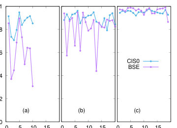
<figcaption class="paper-figure-caption"><b>Fig 1.</b> Figure 2: Largest squared coefficient, c2 max, in the CIS0 expansion and corresponding largest squared BSE transition amplitude for each nuclear configuration at compressions ρ/ρ0 = 3.15, 4.47, and 8.48 [panels (a)–(c)]. Both CIS0 and BSE show an evolution toward an excitation dominated by a single particle-hole pair, c2 max →1, with increasing density.</figcaption>
</figure>
<figure class="paper-figure-card">
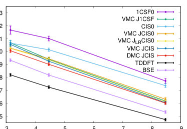
<figcaption class="paper-figure-caption"><b>Fig 2.</b> Figure 1: Neutral excitation gap of phase-I molecular hydrogen as a function of compression ρ/ρ0. For each density, the results are averaged over the nuclear configurations of the 96-atom simulation cell. Error bars indicate the statistical uncertainty associated with the configurational average; for the QMC results, the statistical errors on excitation energies are much smaller.</figcaption>
</figure>
<figure class="paper-figure-card">
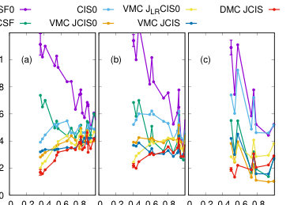
<figcaption class="paper-figure-caption"><b>Fig 3.</b> Figure 3: Difference N∆S(k) between the static structure factors of the excited and ground states, averaged over the nuclear configurations, at compressions ρ/ρ0 = 3.15, 4.47, and 8.48 [panels (a)–(c)]. Statistical errors, dominated by the configurational average, are shown for 1CSF0 and DMC JCIS at the smallest wave vector.</figcaption>
</figure>
<figure class="paper-figure-card">

<figcaption class="paper-figure-caption"><b>Fig 4.</b> Figure 3 shows the small-k behavior of the difference ∆S(k) between the static structure factors of the excited and ground states, averaged over the nuclear configu- rations. The curves are not smooth, due to finite-size reciprocal-lattice shell effects, but clear trends emerge among the different wave functions. As discussed in Sec. II B, a vanishing ∆S(k) in the k →0 limit is con- sistent with an excitation localized within the simulation cell. At the lowest density, 1CSF0 gives the largest ∆S(k) in the long-wavelength limit. The VMC J1CSF wave function reduces it substantially but the curve still in-</figcaption>
</figure>
<figure class="paper-figure-card">
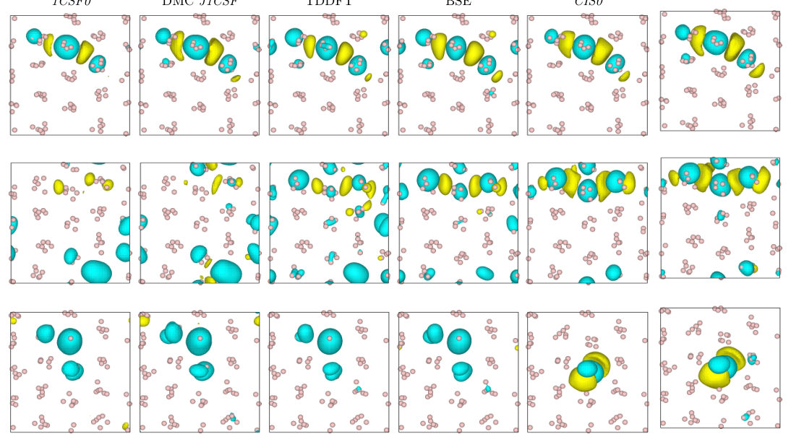
<figcaption class="paper-figure-caption"><b>Fig 5.</b> Figure 4: Excitation-induced density difference, ∆ρ(r), for selected nuclear configurations at ρ/ρ0 = 3.15. Configurations a1, a2, and a8 illustrate different responses to the electronic structure treatment: localization already present at the HF level, progressive localization from HF through TDDFT and BSE toward the QMC result, and localization emerging predominantly with the CIS-based QMC wave functions, respectively. Positive (yellow) and negative (blue) isosurfaces indicate accumulation and depletion of electronic density. The level of the isosurfaces is the default of the VESTA visualization program [50], ± [⟨|∆ρ|⟩+ 2σ(|∆ρ|)], for all methods and configurations. Smallness or absence...</figcaption>
</figure>
</div>
<p><strong>Summary.</strong> This work uses Quantum Monte Carlo methods to study excitons in solid molecular hydrogen under compression, comparing results against BSE and TDDFT. The key finding is that while excitation energies may agree, the description of exciton localization and response properties varies significantly between theoretical approaches. This highlights the critical importance of the chosen many-body formalism when analyzing correlated electronic excitations.</p>
<p><strong>Why it may be interesting.</strong> The detailed comparison of multiple correlated electronic structure methods (QMC, BSE, TDDFT) to characterize excitonic properties in a simple molecular solid provides crucial insights into the limitations and strengths of modern many-body theories for correlated materials.</p>
<details>
<summary>Detailed structure</summary>
<p><strong>Main problem.</strong> The study investigates the nature and spatial extent of the lowest neutral excitation (exciton) in solid molecular hydrogen under varying levels of compression.</p>
<p><strong>Main result.</strong> The authors find that while QMC excitation energies show good agreement across methods, the exciton localization and associated responses (like transition dipole moments) differ significantly between QMC, BSE, and TDDFT, especially in the insulating regime.</p>
<p><strong>Method.</strong> The research employs advanced electronic structure methods, primarily Quantum Monte Carlo (QMC) simulations, and compares results against the Bethe-Salpeter Equation (BSE) and Time-Dependent DFT (TDDFT).</p>
<p><strong>Model / system.</strong> The physical system is solid molecular hydrogen (H2) in phase-I, studied as a function of increasing external compression, which changes the electronic correlation regime.</p>
<p><strong>Key observables.</strong> Exciton binding energy, exciton localization (analyzed via $\Delta S(\mathbf{k})$ and $\Delta
ho(\mathbf{r})$), transition dipole moment ($\mu_{01}$), and excitation-induced forces ($\Delta F_A$).</p>
<p><strong>Important parameters / regimes.</strong> Compression/density ($
ho/
ho_0$), which drives the system from an insulating to a semiconducting regime.</p>
<p><strong>Assumptions / limitations.</strong> The Born-Oppenheimer approximation is used, and the comparison highlights the systematic differences arising from the choice of excited-state wave function expansion (e.g., single-CSF vs. multideterminant CIS).</p>
<p><strong>Figures summary.</strong> Figures illustrate the neutral excitation gap vs. density for multiple methods, the coefficient $c_{2	ext{max}}$ showing the transition from multi-pair to single-pair dominance, and the small-$k$ behavior of the static structure factor difference $\Delta S(\mathbf{k})$.</p>
<p><strong>Paper structure.</strong> The paper systematically compares results from QMC, BSE, and TDDFT across various observables (energy, localization, forces) as a function of density, emphasizing that localization properties are highly sensitive to the theoretical framework used.</p>
</details>
<details>
<summary>Abstract</summary>
<p>We use quantum Monte Carlo (QMC) methods to investigate the lowest neutral excitation of solid molecular hydrogen in phase-I under increasing compression, with emphasis on structural and response properties. We employ QMC wave functions for the excited state that feature only a single orbital substitution, or a multideterminant expansion including every single particle-hole transition, and compare the results with the Bethe-Salpeter equation (BSE) and time-dependent density-functional theory (TDDFT). We examine a number of nuclear configurations representing thermal and quantum fluctuations. The effect of the multideterminant expansion is marginal on the QMC excitation energies but crucial on the exciton localization and related quantities, irrespective of full optimization and imaginary time projection. In the strong insulating regime at low density, multideterminant QMC results match and in some cases surpass the degree of localization afforded by BSE. A similar trend is observed for transition dipole moments and excitation-induced forces, with generally good agreement between QMC and BSE but marked discrepancies for nuclear configurations where localization differs significantly. TDDFT generally gives a more extended exciton with correspondingly weaker transition dipole moments. These differences decrease upon compression, as the system approaches a semiconducting regime where multiple particle-hole transitions are less important.</p>
</details>
<p><sub><a href="#top">↑ back to top</a></sub></p>

<p><a id="paper-2610.40490"></a></p>
<h3 id="fast-and-accurate-neural-triage-decoding-of-ultra-high-rate-quantum-ldpc-codes"><a href="http://arxiv.org/abs/2610.40490v1">Fast and accurate neural triage decoding of ultra-high-rate quantum LDPC codes</a></h3>
<p><strong>Authors:</strong> Hong-Ye Hu, Zhenlai Wang, Binzhao Luo, Tao Xiang, Chen Zhao<br>
<strong>Type:</strong> theory · <strong>Category:</strong> quantum information and computing · <strong>PDF:</strong> <a href="https://arxiv.org/pdf/2610.40490v1">https://arxiv.org/pdf/2610.40490v1</a><br>
<strong>Analysis basis:</strong> full PDF text, analyzed in chunks</p>
<div class="figure-strip-hint">↔ Scroll figures horizontally</div>
<div class="paper-figures-scroll">
<figure class="paper-figure-card">
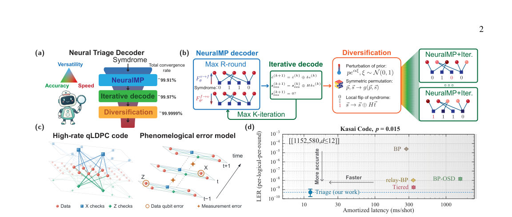
<figcaption class="paper-figure-caption"><b>Fig 1.</b> Figure 1. Neural triage decoding for high-rate quantum LDPC codes. (a) The Triage decoder combines a fast NeuralMP local decoder with iterative decoding strategy. For rare cases when proposed errors cannot resolve all syndrome, it enters diversification stage. The Triage decoder allocate computation resources adaptively to achieve high accuracy, high speed and being versatile simultaneously. (b) NeuralMP performs R internal MP-rounds per evaluation. Then iterative decoding repeatedly applies the network to the residual syndrome for up to K outer iterations. Remaining shots enter diversification stage, which uses prior perturbations, symmetric permutations and syndrome flips to explore...</figcaption>
</figure>
<figure class="paper-figure-card">
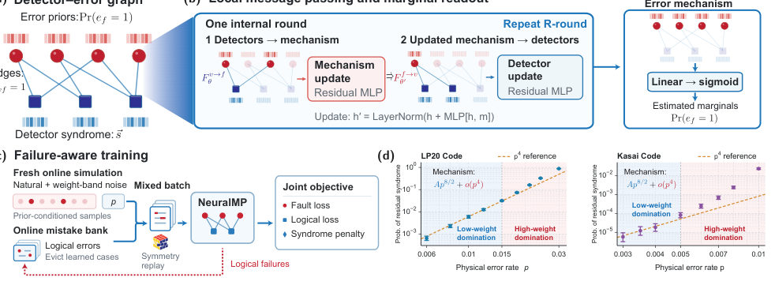
<figcaption class="paper-figure-caption"><b>Fig 2.</b> Figure 2. NeuralMP architecture, failure-aware training and residual-syndrome scaling. (a) The Tanner graph of the DEM connects fault mechanisms (red circles) to detectors (blue squares) through Hvf = 1. Red colored bars represent node states encoding mechanism priors together with positions embedding and blue colored bars represent detector outcomes embedding. (b) Each MP-round first updates fault states using neighbouring detector states, then updates detector states using the updated fault states. Aggregated messages enter residual multilayer perceptrons (MLPs) with layer normalization. After R MP-rounds, a linear readout followed by a sigmoid produces one marginal estimate per...</figcaption>
</figure>
<figure class="paper-figure-card">
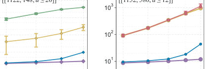
<figcaption class="paper-figure-caption"><b>Fig 3.</b> Figure 3. Decoding accuracy and amortized latency on LP20 and Kasai codes. (a) Logical error rate (LER) per-qubit-per-round ver- sus physical error rate p, using approximately 0.04–40.96 million shots per point for LP20 code and 0.24–20.48 million for Kasai code. Error bars quantify finite-sampling uncertainty using 95% Clopper– Pearson intervals. (b) Amortized decoding latency. We benchmark the latency using NVIDIA H200 GPU. NeuralMP (Triage’s fron- tend) reports the asymptotic frontend cost, whereas Triage shows the composed full-decoder cost at batch size 64, including handoff and diversification. CPU baseline timing uses 1,000–5,000 shots per point. Timing error bars, where shown, are...</figcaption>
</figure>
<figure class="paper-figure-card">
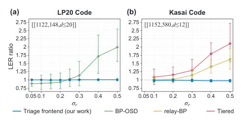
<figcaption class="paper-figure-caption"><b>Fig 4.</b> Figure 4. Robustness to mismatched error priors. Block-LER ratio relative to correctly specified priors versus nominal mismatch strength σr for (a) LP20 code at p = 0.024, and (b) Kasai code at p = 0.0175. NeuralMP uses four decoding iterations. Each prior realization is evaluated on 9 × 105 shots for LP20 code and 6 × 105 shots for Kasai code, sharing the same noise samples with the matched-prior baseline. Two prior realizations are used per σr, except LP20 at σr = 0.1 and 0.3, which use four. Markers show ge- ometric means of the per-realization LER ratios. Error bars span the per-realization ratio intervals obtained by transforming conditional 95% Clopper–Pearson intervals.</figcaption>
</figure>
</div>
<p><strong>Summary.</strong> This paper introduces 'neural triage decoding,' a novel framework designed to decode ultra-high-rate quantum LDPC codes efficiently. By adaptively combining a local neural message-passing network with iterative refinement and diversification, the method achieves state-of-the-art accuracy while dramatically reducing decoding latency. This establishes a promising, scalable path for implementing quantum error correction in near-term quantum hardware.</p>
<p><strong>Why it may be interesting.</strong> This work directly addresses the computational bottleneck in scaling quantum computation by providing a fast, ML-enhanced decoding scheme for complex quantum codes, which is crucial for any physicist working on fault-tolerant quantum systems.</p>
<details>
<summary>Detailed structure</summary>
<p><strong>Main problem.</strong> The core problem is developing decoding algorithms for high-rate quantum low-density parity-check (qLDPC) codes that are both highly accurate and computationally fast enough for near-term fault-tolerant quantum computing.</p>
<p><strong>Main result.</strong> The proposed 'neural triage decoding' framework achieves state-of-the-art accuracy comparable to near-optimal algorithmic decoders while drastically reducing decoding latency by one to two orders of magnitude.</p>
<p><strong>Method.</strong> The method combines a local neural message-passing network (NeuralMP) for rapid initial predictions, followed by iterative refinement using the residual syndrome, and a rare diversification stage to ensure full syndrome consistency.</p>
<p><strong>Model / system.</strong> The system involves quantum error correction using high-rate qLDPC codes, which are modeled on a sparse bipartite graph (Tanner graph) derived from the parity check matrix H.</p>
<p><strong>Key observables.</strong> Logical Error Rate (LER) per-qubit-per-round, decoding latency, and syndrome consistency.</p>
<p><strong>Important parameters / regimes.</strong> High encoding rates (exceeding 1/2), physical error rate (p), and the number of logical qubits encoded.</p>
<p><strong>Assumptions / limitations.</strong> The success relies on the adaptive allocation of neural computation resources to balance speed and accuracy, and the framework is inspired by analyzing the exact bitwise marginal decoder.</p>
<p><strong>Figures summary.</strong> Figure 1 illustrates the Triage decoder structure combining NeuralMP, iteration, and diversification, alongside a comparison of latency and error rates. Figure 2 details the NeuralMP architecture and residual syndrome scaling. Figure 3 compares LER and amortized latency against other decoders.</p>
<p><strong>Paper structure.</strong> The paper introduces the Triage decoder, details its three components (NeuralMP, iteration, diversification), provides theoretical grounding via analysis of the marginal decoder, and concludes with performance comparisons against state-of-the-art algorithmic decoders.</p>
</details>
<details>
<summary>Abstract</summary>
<p>Quantum error correction is essential for fault-tolerant quantum computing. High-rate quantum low-density parity-check (qLDPC) codes have emerged as a promising approach to reducing the substantial physical qubit overhead of quantum error correction, enabling encoding rates exceeding $1/2$ in blocks of approximately one thousand physical data qubits. However, their practical implementation requires decoders that combine high accuracy with low latency to keep pace with quantum hardware. Existing decoders of high-rate qLDPC codes can achieve high accuracy but often incur substantial computational latency, whereas neural network decoders have yet to be demonstrated for high-rate qLDPC codes. Here, we introduce \emph{neural triage decoding}, a framework that uses syndrome consistency to adaptively allocate neural computation. A local neural message-passing network rapidly predicts error corrections, additional iterations reduce residual syndrome violations, and a rarely invoked diversification stage searches for consistent corrections to the remaining shots. We demonstrate that the \texttt{Triage} decoder can decode ultra-high-rate qLDPC codes encoding a few hundred logical qubits, including lifted-product and Kasai codes, achieving state-of-the-art accuracy comparable to the near optimal algorithmic decoders while reducing decoding latency by approximately one to two orders of magnitude. Our framework is inspired by a rigorous analysis of the exact bitwise marginal decoder, revealing a distance-independent syndrome-inconsistent error floor. In addition, we show the robustness of neural network decoders to mismatched error priors. Our results establish adaptive neural decoding as a promising route towards fast, accurate, and scalable quantum error correction in the near term.</p>
</details>
<p><sub><a href="#top">↑ back to top</a></sub></p>

<p><a id="paper-2610.39217"></a></p>
<h3 id="geometric-renyi-divergence-and-rld-fisher-information-under-quantum-processes-without-definite-causal-order"><a href="http://arxiv.org/abs/2610.39217v1">Geometric Rényi divergence and RLD Fisher information under quantum processes without definite causal order</a></h3>
<p><strong>Authors:</strong> Zixin Huang, Mark M. Wilde<br>
<strong>Type:</strong> theory · <strong>Category:</strong> quantum information and computing · <strong>PDF:</strong> <a href="https://arxiv.org/pdf/2610.39217v1">https://arxiv.org/pdf/2610.39217v1</a><br>
<strong>Analysis basis:</strong> full PDF text, analyzed in chunks</p>
<div class="figure-strip-hint">↔ Scroll figures horizontally</div>
<div class="paper-figures-scroll">
<figure class="paper-figure-card">
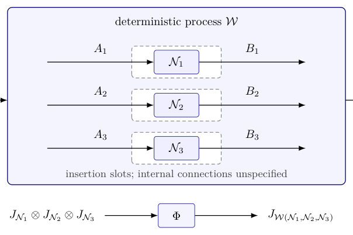
<figcaption class="paper-figure-caption"><b>Fig 1.</b> Figure 1: Channel slots and their Choi representation. The shaded region is a deterministic process with external input C and output D. The three unshaded holes are insertion slots, each containing a replaceable channel and its own labeled input and output wires. Each local input-to-output direction runs from left to right. The internal connections are unspecified; the drawing does not impose a relative temporal order on the three slots. The lower line is an algebraic representation: the tensor product records the independently replaceable slots, and the completely positive transformation Φ contains their wiring. Normalization must hold for every independent triple of inserted channels.</figcaption>
</figure>
<figure class="paper-figure-card">
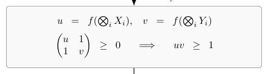
<figcaption class="paper-figure-caption"><b>Fig 2.</b> Figure 2: The lower-bound mechanism in Theorem 4.2. In each slot, the positive Choi operator Xi is normalized by its input marginal Ki to a channel Choi operator Ji. The reciprocal Choi operator Yi has marginal K−1 i . The cross operator Zi = FiJiF −1 i need not be positive, but its marginal is I, so affine normalization fixes f(N i Zi) = 1. Cauchy–Schwarz relates the two positive weights through the displayed Gram matrix for A = J1/2F and B = J1/2F −1 in (4.16). Its off-diagonal entries are one by affine normalization. The upper bound on the reciprocal weight supplies the desired lower bound. The arrows denote algebraic constructions, not physical implementation of inverse filters.</figcaption>
</figure>
<figure class="paper-figure-card">
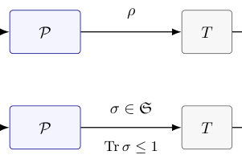
<figcaption class="paper-figure-caption"><b>Fig 3.</b> Figure 3: A capacity converse compares two experiments with the same process P and target test T. Resource channels produce ρ, which must pass with probability at least 1 −ε. Allowed comparison operations produce σ ∈S with Tr σ ≤1. Its unconditioned acceptance weight Tr(Tσ) is at most 2−ℓ. The process inequality bounds the divergence between these outputs. Preservation of S is an additional assumption on the complete communication protocol; it is not implied by deterministic normalization. The diagram is a comparison of experiments, not two stages of one protocol.</figcaption>
</figure>
<figure class="paper-figure-card">

<figcaption class="paper-figure-caption"><b>Fig 4.</b> Figure 3 separates the two hypotheses used in this argument. The output test is a mathematical tool for the converse and need not be implementable by the communicating parties. For the asymptotic consequence, use N in every slot and one common comparison class F that is independent of both the slot and the blocklength. Then (7.2) defines one quantity dα(N) and the sum in (7.3) is ndα(N). For a target ℓn ≥nr, a fixed Rényi order 1 &lt; α ≤2 gives the success bound 2−n(α−1)[r−dα(N)]/α. Thus every r &gt; inf{dα(N) : 1 &lt; α ≤2} is a strong-converse rate for a class obeying (7.1) at every blocklength. For rates specified by lim infn ℓn/n ≥r, first use a slightly smaller rate and then take its limit. A...</figcaption>
</figure>
<figure class="paper-figure-card">
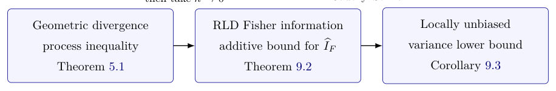
<figcaption class="paper-figure-caption"><b>Fig 5.</b> Figure 4: From the process divergence inequality to an estimation bound. Three slots of a channel- to-state process are shown. The proof replaces each channel family by the affine Choi path Ji + hHi, which agrees with its value and first derivative at θ0. When the local RLD informations are finite, these are channels with fixed support for sufficiently small h, as proved in Theorem 9.2. The parameter h is a displacement, not physical time; the left-to-right slot wires do not specify an order between slots. Solid wires carry quantum systems; the doubled wire carries the classical measurement outcome, whose probability is ph(x) = Tr[Mxωh] for the auxiliary affine family. The process and...</figcaption>
</figure>
</div>
<p><strong>Summary.</strong> This paper derives fundamental, additive bounds for quantum information measures—specifically the geometric Rényi divergence and the RLD Fisher information—when quantum processes lack a definite causal order. It shows that the total resource capacity is limited by the sum of the capacities of the individual channels used. This provides a powerful, order-independent tool for analyzing quantum communication and estimation protocols.</p>
<p><strong>Why it may be interesting.</strong> The work provides fundamental, order-independent bounds for quantum resource quantification (like distinguishability and estimation precision), which is crucial for designing robust quantum protocols in realistic, non-sequential settings.</p>
<details>
<summary>Detailed structure</summary>
<p><strong>Main problem.</strong> The paper addresses how to quantify distinguishability, parameter estimation precision, and communication capabilities in quantum experiments where the causal order of multiple channel uses is not fixed.</p>
<p><strong>Main result.</strong> It establishes additive bounds for both the geometric Rényi divergence and the RLD Fisher information, showing that the total bound is the sum of the bounds from individual, independently used channels.</p>
<p><strong>Method.</strong> The analysis derives these bounds by replacing the standard sequential chain rule with a normalization requirement imposed on the output of the overall process, utilizing operator inequalities and divergence definitions.</p>
<p><strong>Model / system.</strong> The model involves general quantum processes acting on Choi operators, which are composed of multiple, independently replaceable quantum channels ($\mathcal{N}_i$). The analysis is purely theoretical, using operator algebra and information-theoretic measures.</p>
<p><strong>Key observables.</strong> Geometric Rényi divergence ($  ext{b}_{    ext{D}\alpha}$), Right Logarithmic Derivative (RLD) Fisher information ($   ext{bIF}$), and the mean-square error (MSE) in estimation.</p>
<p><strong>Important parameters / regimes.</strong> The Rényi order $\alpha \in (0, 1) \cup (1, 2]$, the number of independent channels ($n$), and the parameter $    heta$ governing channel variation.</p>
<p><strong>Assumptions / limitations.</strong> The bounds are proven for deterministic processes satisfying a normalization requirement, and the Fisher information bound requires the channel families to be differentiable at the point of estimation.</p>
<p><strong>Paper structure.</strong> The paper first develops the geometric Rényi divergence bound for non-definite causal order processes, then applies this framework to derive the additive bound for the RLD Fisher information, and finally discusses applications to channel discrimination and estimation.</p>
</details>
<details>
<summary>Abstract</summary>
<p>Quantum experiments without a definite causal order offer new ways to distinguish devices, estimate physical parameters, and communicate. We prove a common limit on these tasks: the geometric Rényi divergence at the output of a deterministic completely positive process cannot exceed the sum of the divergences of its individual channel uses. The inequality holds for every Rényi order in $(0,1)\cup(1,2]$ and any number of independently replaceable channels. Parallel experiments with separate reference-assisted inputs approach the bound, giving an exact equality after optimization over processes. We also prove an additive bound on the right logarithmic derivative Fisher information of parameter-dependent channels under every fixed process in this class. A resulting Cramér--Rao bound limits locally unbiased estimation precision without assuming a definite causal order, and an erasure-probability example attains the bound. The proofs for the geometric Rényi divergence and RLD Fisher information follow from the requirement that every independent choice of channels produce a normalized output. We show how this requirement controls positive local operations, and how small channel perturbations convert the divergence inequality into a Fisher-information bound, including for singular channels. Further applications give finite-use bounds on channel discrimination and exclusion, together with communication and private-state-generation converses when the processes preserve the relevant comparison conditions.</p>
</details>
<p><sub><a href="#top">↑ back to top</a></sub></p>

<p><a id="paper-2610.39731"></a></p>
<h3 id="going-deep-reaching-further-what-can-boltzmann-machines-efficiently-represent"><a href="http://arxiv.org/abs/2610.39731v1">Going deep, reaching further: What can Boltzmann machines efficiently represent?</a></h3>
<p><strong>Authors:</strong> Tobias Reinhart, Gemma De les Coves<br>
<strong>Type:</strong> theory · <strong>Category:</strong> disordered systems and neural networks · <strong>PDF:</strong> <a href="https://arxiv.org/pdf/2610.39731v1">https://arxiv.org/pdf/2610.39731v1</a><br>
<strong>Analysis basis:</strong> full PDF text, analyzed in chunks</p>
<div class="figure-strip-hint">↔ Scroll figures horizontally</div>
<div class="paper-figures-scroll">
<figure class="paper-figure-card">
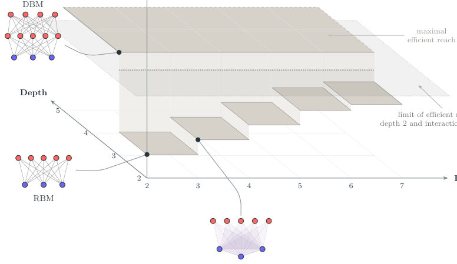
<figcaption class="paper-figure-caption"><b>Fig 1.</b> Figure 1: Efficient reach of machine learning models. The efficient reach (vertical axis), i.e. the efficient representation capabilities of several machine learning models, as a function of their depth and interaction order (horizontal axes), where the latter is the number of units involved in each interaction. Height depicts ordinal inclusion, so that larger efficient reach means the respective models can efficiently represent more targets. We prove that, for depth ≥3, there are models whose efficient reach is max- imal, irrespective of the interaction order. Models of depth 2 form an infinite hierarchy for increasing interaction order that saturates strictly below the maximal efficient...</figcaption>
</figure>
<figure class="paper-figure-card">
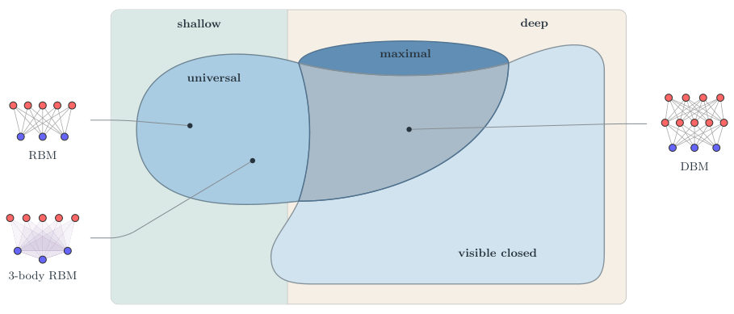
<figcaption class="paper-figure-caption"><b>Fig 2.</b> Figure 2: Characterization of maximal models. Set diagram showing properties of machine learning models and their interplay in our characterization of maximal models. Inclusions are not necessarily strict. The three properties given by universal, visible closed and maximal, are such that any two of them imply the third. The area where the three properties hold is depicted in a blue-gray shade. Maximal models are necessarily deep. DBMs are maximal. RBMs and 3-body RBMs are universal, but are not deep, and thus not maximal. We expect most “natural” deep models to be visible closed, and hence most deep universal models to be maximal.</figcaption>
</figure>
<figure class="paper-figure-card">
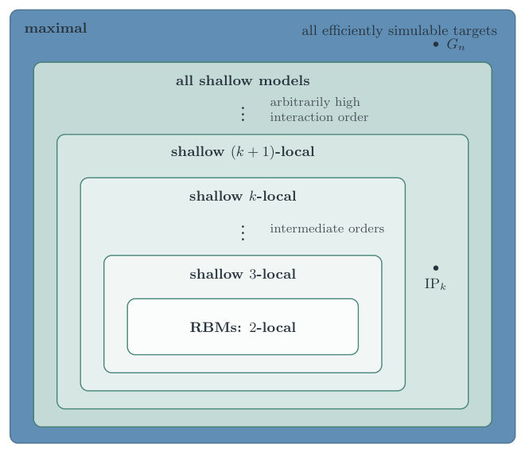
<figcaption class="paper-figure-caption"><b>Fig 3.</b> Figure 3: Separation hierarchy for shallow models. Set diagram showing the efficient reach of var- ious machine learning model classes. Each rounded rectangle depicts the maximal set of target functions that the respective model class can efficiently simulate. All shown inclusions are proven to be strict. By definition maximal models have maximal efficient reach, i.e. can efficiently simulate all targets that can be efficiently simulated, including NP-hard functions such as the Ising ground-state function Gn. Shallow models have strictly smaller efficient reach; for example, they cannot efficiently simulate Gn. The efficient reach of shallow models is given by an infinite, strict inclusion...</figcaption>
</figure>
<figure class="paper-figure-card">
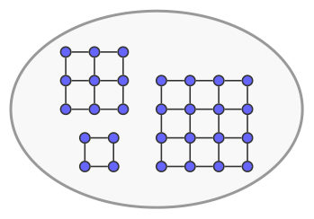
<figcaption class="paper-figure-caption"><b>Fig 4.</b> Figure 4: Ising system and model. A 2d (square lattice) Ising system 4a, spins are blue vertices, their interactions are attached to edges of the graph and are not explicitly shown, and the 2d Ising model 4b, that is, the set of all such 2d Ising systems, for arbitrary system size and local couplings. Both are defined in Example 2.</figcaption>
</figure>
<figure class="paper-figure-card">
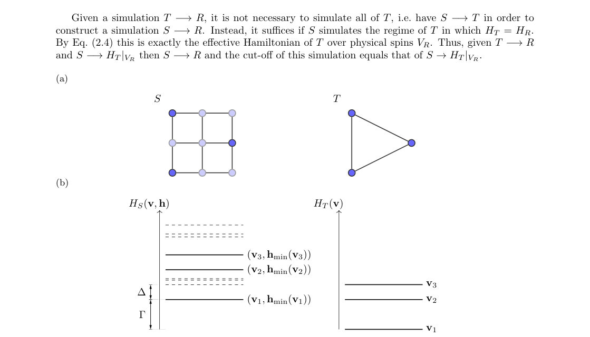
<figcaption class="paper-figure-caption"><b>Fig 5.</b> Figure 5: Example of a simulation. A source system S (5a, LHS) physical spins in opaque, auxiliary spins in transparent) simulates a target system T (5a, RHS) if minh HS(v, h) = HT (v)+Γ. This condition relates the two respective energy functions, as shown in 5b. In this example, the simulation has constant degeneracy d = 1, so each target configuration (5b, RHS) vi has a unique source configuration (5b, LHS) (vi, hmin(vi)) with up to a shift of Γ, equal energy. The cut-off ∆of the simulation is the minimal energy gap between “correct” auxiliary configuration (hmin(v), thick lines), and “incorrect” auxiliary configurations (dashed lines).</figcaption>
</figure>
</div>
<p><strong>Summary.</strong> This paper rigorously analyzes the representational power of neural network models by defining 'efficient reach.' It proves that model depth and higher-order interactions are crucial, showing that deep architectures (DBMs) achieve a maximal capacity that shallow models (RBMs) cannot match. This provides a theoretical foundation for understanding the limitations and strengths of different ML architectures in encoding complex physical data.</p>
<p><strong>Why it may be interesting.</strong> The theoretical understanding of which model architectures (deep vs. shallow) can efficiently encode complex physical correlations (like those found in spin glasses or correlated materials) provides a rigorous framework for designing better machine learning models for physics.</p>
<details>
<summary>Detailed structure</summary>
<p><strong>Main problem.</strong> To investigate the 'efficient representation capabilities' (efficient reach) of machine learning models, addressing shortcomings of Universal Approximation Theorems which ignore efficiency and depth.</p>
<p><strong>Main result.</strong> Deep Boltzmann Machines (DBMs) are proven to have maximal efficient reach, while shallower models like RBMs have sub-maximal reach, establishing a clear hierarchy based on model depth and interaction order.</p>
<p><strong>Method.</strong> The work uses theoretical proofs, computational complexity bounds, and communication complexity bounds applied to spin models to characterize the limits of efficient representation.</p>
<p><strong>Model / system.</strong> The models studied are machine learning models, specifically Boltzmann Machines (RBMs, DBMs) framed as spin systems defined by local energy functions (Hamiltonians) on hyperedges.</p>
<p><strong>Key observables.</strong> Efficient Reach, KL divergence, Energy Error (RS), and the ability to simulate/approximate specific complex functions (e.g., NP-hard functions).</p>
<p><strong>Important parameters / regimes.</strong> Model depth (number of layers), interaction order ($k$), and the size of the system ($n$).</p>
<p><strong>Assumptions / limitations.</strong> The analysis relies on the formalization of 'visible closure' for ML models, which is shown to be equivalent to maximal efficient reach.</p>
<p><strong>Figures summary.</strong> Figure 1 illustrates that DBMs achieve maximal reach, while shallower models form a hierarchy. Table 1 summarizes separations for three tasks comparing shallow vs. maximal models.</p>
<p><strong>Paper structure.</strong> The paper first critiques UATs, then provides a full characterization of models with maximal reach using visible closure. It then establishes separations between shallow and deep models for simulating and approximating complex functions, concluding with a hierarchy proof based on interaction order.</p>
</details>
<details>
<summary>Abstract</summary>
<p>While universal approximation theorems theoretically underpin the representation capabilities of machine learning models, they have two shortcomings: They do not focus on efficient representations and they tend to be insensitive to depth and other heuristically important properties. In this work we show that these two shortcomings are intertwined. We prove that machine learning models which are deeper or have higher-order interactions can efficiently represent a larger set of functions, i.e. have larger efficient reach. It follows that deep Boltzmann machines (DBMs) have maximal efficient reach, restricted Boltzmann machines (RBMs) sub-maximal, and k-body generalizations of RBMs form a hierarchy between the two, even though all are universal. More generally, (i) we provide a full characterization of machine learning models with maximal efficient reach; (ii) we derive separations between deep and shallow models for three representation tasks; and (iii) we prove that the efficient reach of shallow models constitutes an infinite hierarchy indexed by the interaction order. The proofs draw on different methodologies, namely on (i) a recent characterization of universal spin models; (ii) computational complexity bounds for spin models; and (iii) communication complexity bounds applied to shallow models. This work shows that universal machine learning models can strongly differ in their efficient representation capabilities, and provides a theoretical foundation for heuristic observations.</p>
</details>
<p><sub><a href="#top">↑ back to top</a></sub></p>

<p><a id="paper-2610.40481"></a></p>
<h3 id="lattice-moments-and-quantum-designs"><a href="http://arxiv.org/abs/2610.40481v1">Lattice moments and quantum designs</a></h3>
<p><strong>Authors:</strong> Jonathan Conrad, Kristian Holm<br>
<strong>Type:</strong> theory · <strong>Category:</strong> quantum information and computing · <strong>PDF:</strong> <a href="https://arxiv.org/pdf/2610.40481v1">https://arxiv.org/pdf/2610.40481v1</a><br>
<strong>Analysis basis:</strong> full PDF text, analyzed in chunks</p>
<div class="figure-strip-hint">↔ Scroll figures horizontally</div>
<div class="paper-figures-scroll">
<figure class="paper-figure-card">
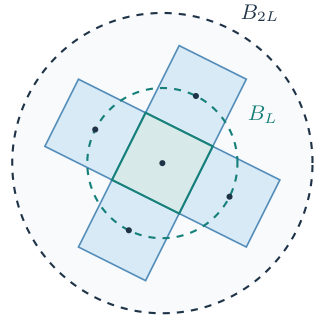
<figcaption class="paper-figure-caption"><b>Fig 1.</b> Figure 1: Geometry behind the bound on Ip(H). The left illustration depicts the lattice Mℓat F5 for v = (1, −2, 2, 0) and w = (2, 1, −1, 0); the right illustration depicts Voronoi cells for Mℓin the first shells of BL.</figcaption>
</figure>
</div>
<p><strong>Summary.</strong> This theoretical paper proves that the GKP distribution ensemble does not form a quantum 3-design, quantifying the failure using a defect term $\delta_n$. It achieves this by employing advanced techniques from the theory of symplectic lattices and Hecke operators to calculate the third quantum moment. The result provides a rigorous mathematical constraint on the performance of these quantum codes.</p>
<p><strong>Why it may be interesting.</strong> The connection between deep number theory (Hecke operators, lattice sums) and the fundamental properties of quantum states (quantum designs) provides powerful new mathematical tools for analyzing quantum error-correcting codes.</p>
<details>
<summary>Detailed structure</summary>
<p><strong>Main problem.</strong> The paper investigates whether the ensemble of unimodular Gottesman-Kitaev-Preskill (GKP) distributions forms a rigged quantum 3-design.</p>
<p><strong>Main result.</strong> The ensemble fails to form a rigged quantum 3-design for $n \ge 2$, and the failure is quantified by a non-zero defect $\delta_n$ related to Epstein's $\zeta$-function for $A_2$.</p>
<p><strong>Method.</strong> The analysis combines techniques from number theory (Hecke operators, lattice sums) with quantum information theory, calculating higher-order moments via lattice geometry.</p>
<p><strong>Model / system.</strong> The system involves GKP codes defined on the infinite-dimensional Hilbert space $L^2(\mathbb{R}^n)$, characterized by a symplectic lattice symmetry $\Lambda$. The analysis uses lattice theory and Fourier analysis to compute quantum moments.</p>
<p><strong>Key observables.</strong> The third moment $M_3$ and the defect $\lVert D_3 
Vert = \delta_n$.</p>
<p><strong>Important parameters / regimes.</strong> The dimension $n$, the prime $p$ (used in Hecke operators), and the lattice structure $\Lambda$.</p>
<p><strong>Assumptions / limitations.</strong> The derivation relies on rederiving a second moment formula for symplectic lattices and assuming the validity of limit exchanges ($p 	o \infty$).</p>
<p><strong>Figures summary.</strong> Not specified, but the notes mention Figure 1 illustrating the geometry behind bounds on $I_p(H)$ using lattice $\mathcal{M}_\ell$ and Voronoi cells.</p>
<p><strong>Paper structure.</strong> The paper develops the analysis by first establishing the failure of 3-designs, deriving a self-contained second moment formula for symplectic lattices, and finally calculating the defect $D_3$ using lattice sums and asymptotic analysis.</p>
</details>
<details>
<summary>Abstract</summary>
<p>We show that the ensemble of unimodular Gottesman$-$Kitaev$-$Preskill distributions fails to form a rigged quantum $3$-design and quantify the replica defect that determines this failure. This is established by rederiving a second moment formula for symplectic lattices in a self-contained manner.</p>
</details>
<p><sub><a href="#top">↑ back to top</a></sub></p>

<p><a id="paper-2610.38847"></a></p>
<h3 id="local-quantum-fault-tolerance-without-expansion"><a href="http://arxiv.org/abs/2610.38847v1">Local Quantum Fault Tolerance Without Expansion</a></h3>
<p><strong>Authors:</strong> David Ponarovsky<br>
<strong>Type:</strong> theory · <strong>Category:</strong> quantum information and computing · <strong>PDF:</strong> <a href="https://arxiv.org/pdf/2610.38847v1">https://arxiv.org/pdf/2610.38847v1</a><br>
<strong>Analysis basis:</strong> full PDF text, analyzed in chunks</p>
<div class="figure-strip-hint">↔ Scroll figures horizontally</div>
<div class="paper-figures-scroll">
<figure class="paper-figure-card">
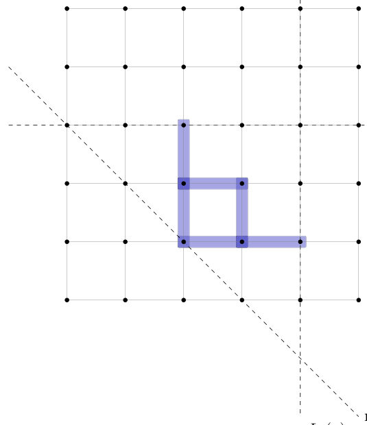
<figcaption class="paper-figure-caption"><b>Fig 1.</b> Figure 1: A graphical example of the maximal values of the potential walls. Here we consider the (2, 1)-Toric code, namely the bits are set on the edges where the Z-stabilizers (parity checks) are set on the vertices. The grid is a finite 6 × 6 patch of the infinite 2D plane. The edges marked in blue correspond to a bits assignment z. Each of the dashed lines marks the line of vertices whose Li value converges with the maximal value reached by a vertex in z. Moving into the infinite plane enables us to determine those lines and draw the triangle that bounds z.</figcaption>
</figure>
<figure class="paper-figure-card">
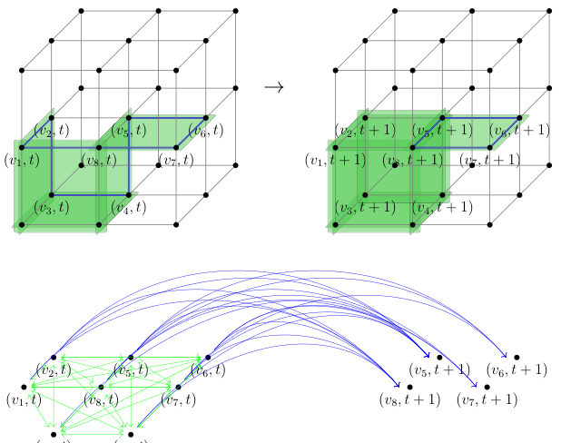
<figcaption class="paper-figure-caption"><b>Fig 2.</b> Figure 2: Above: The application of a sweep-cycle, where the green faces represent the bits assignment z, and the blue edges correspond to unsatisfied checks ∂−z. The vertices witnessing a syndrome, namely belonging to ∂−z, are labeled as v1, v2, . . . , v8. Notice that the leftmost bottom-inner vertex is not witnessing a syndrome even though it belongs to z. Below: The Toom’s contour derived from the single computation layer that matches the cycle. Arrows are colored in blue, while forks are colored in green. Note that (v1, t + 1) doesn’t belong to the Toom’s contour (since v1 doesn’t see an unsatisfied check at time t + 1).</figcaption>
</figure>
<figure class="paper-figure-card">
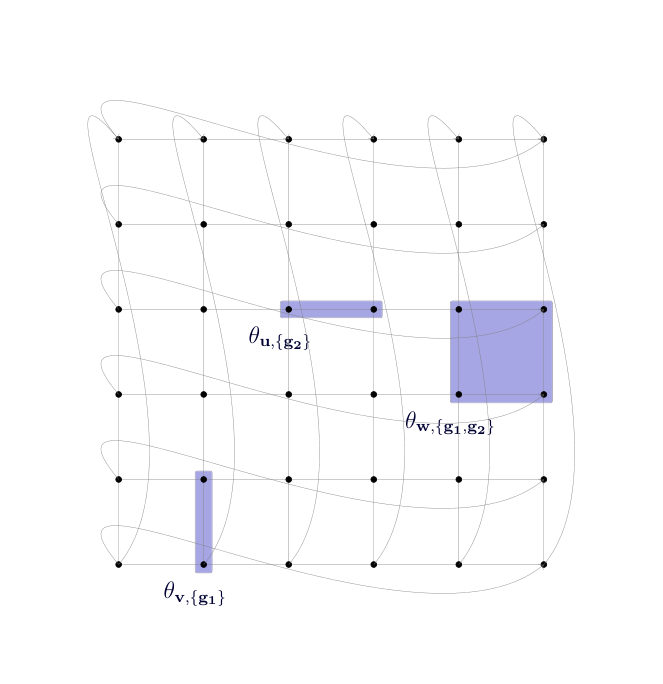
<figcaption class="paper-figure-caption"><b>Fig 3.</b> Figure 3: Here we consider a 2D Toric complex. We name the set of generators S = {g1, g2}, where g1 is the generator that sends us one step in the north direction, and g2 sends us in the east direction. For vertices v, u, w, we mark in blue three faces that are rooted at them.</figcaption>
</figure>
<figure class="paper-figure-card">
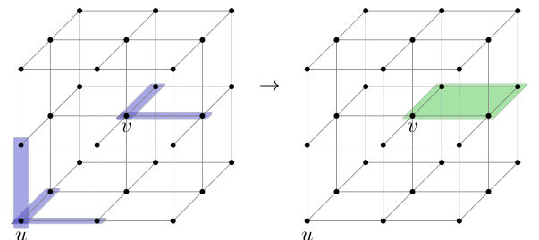
<figcaption class="paper-figure-caption"><b>Fig 4.</b> Figure 4: An example of applying the sweep rule within the (3, 2)-Toric code. In the (3, 2)-Toric code, bits are placed on the squares and Z-stabilizers (parity checks) on the edges. The view is restricted to two vertices, u and v. On the left, the unsatisfied positive checks of u and v are highlighted in blue. On the right, the bits to be flipped are marked in green. Given the syndrome, vertex v flips one of its positive faces, whereas for u, there is no subset of positive faces that, when flipped, satisfies local checks. Therefore, u flips no bit.</figcaption>
</figure>
<figure class="paper-figure-card">
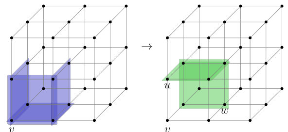
<figcaption class="paper-figure-caption"><b>Fig 5.</b> Figure 5: Consider the (3, 2)-Toric code, with qubits and X-checks set on the 2- and 1-dimensional faces. In blue, we have a 2-dimensional chain where the vertex achieving the maximum of Ld+1, denoted by v, does not see any unsatisfied checks in its positive local view. The green faces represent a 2-dimensional chain, which is the reduced form of the blue. In particular, any local maximum of Ld+1 (vertices u and w) sees a non-trivial syndrome in its positive local view. Namely, the maximal points of Ld+1 in the chain are also the maximal points in the boundary ∂−.</figcaption>
</figure>
</div>
<p><strong>Summary.</strong> This paper develops a method for fault-tolerant quantum computation using the Toric code that avoids the need for code expansion. It proves a threshold theorem showing that a simple, constant-depth syndrome correction cycle can effectively combat local-stochastic noise. This provides a geometrically simple and highly desirable framework for building scalable quantum computers.</p>
<p><strong>Why it may be interesting.</strong> The focus on fixed, constant-depth syndrome processing without expansion is a major theoretical advance for building practical, scalable quantum error correction protocols.</p>
<details>
<summary>Detailed structure</summary>
<p><strong>Main problem.</strong> The paper addresses achieving fault-tolerant quantum computation using simple, local error-correction rules without relying on code expansion.</p>
<p><strong>Main result.</strong> It establishes a circuit-level threshold theorem for the 4D Toric code, showing that a fixed, constant-depth syndrome-based correction cycle can recover the state under local-stochastic Pauli noise.</p>
<p><strong>Method.</strong> The proof utilizes a chain-complex viewpoint, combining geometric shrinking under a sweep rule with a space-time explanation-tree argument inspired by Toom's theorem.</p>
<p><strong>Model / system.</strong> The system is modeled using the cubical (d,d')-Toric code, analyzed in a circuit model subjected to local-stochastic Pauli noise.</p>
<p><strong>Key observables.</strong> Logical failure probability, which is bounded by $O(	ext{poly}(w, \mu, n)) p^{\Omega(n)}$ for noise rate $p$ below a threshold.</p>
<p><strong>Important parameters / regimes.</strong> Noise rate $p$, code dimensions $d, d'$, and lattice size $n$.</p>
<p><strong>Assumptions / limitations.</strong> The classical processing per time step is assumed noiseless and has bounded depth; the noise is local-stochastic Pauli noise.</p>
<p><strong>Figures summary.</strong> Figure 1 illustrates potential walls bounding a syndrome component in the (2, 1)-Toric code, emphasizing the use of geometric span over Hamming weight.</p>
<p><strong>Paper structure.</strong> The paper presents three main results: an explicit higher-dimensional sweep rule, a circuit-level threshold theorem for noisy sweep cycles, and a proof of ideal decoding under local-stochastic noise.</p>
</details>
<details>
<summary>Abstract</summary>
<p>We study fault-tolerant quantum computation using a fixed, local error-correction rule and a geometrically simple code: the cubical $(d,d')$-Toric code with $d',d-d'\geq 2$, including the 4D Toric code. Under sufficiently weak local-stochastic Pauli noise, our construction uses noiseless, bounded-depth classical processing per physical time step. Its correction cycle acts only on the current syndrome, has constant depth, and is repeated unchanged during idle logical computation; it requires neither multiscale decoder states nor scale-dependent communication delays.   Our proof treats errors and syndromes as chains in a cubical complex, combining geometric shrinking under the sweep rule with a space--time explanation-tree argument inspired by Toom's theorem. It does not rely on expansion. We establish three results:   1.Explicit higher-dimensional sweep rule. We give a local algorithm for choosing sweep corrections on cubical $(d,d')$-Toric complexes, resolving the local-existence question of Kubica and Preskill.   2. Fault-tolerant computation. We prove a circuit-level threshold theorem for noisy sweep cycles interleaved with logical gates. In particular, the 4D Toric code admits a fixed, constant-depth syndrome-based correction cycle without a multiscale decoder or expansion-based encoding. We do not claim constant total-depth overhead.   3. Ideal decoding under local-stochastic noise. For an initial local-stochastic Pauli error of rate $p$ below threshold, $n^{d+1}$ noiseless sweep cycles recover the encoded state on a side-length-$n$ $(d,d')$-Toric code with probability at least $1-O(\operatorname{poly}(n))p^{Ω(n)}$, extending earlier guarantees for independent errors.</p>
</details>
<p><sub><a href="#top">↑ back to top</a></sub></p>

<p><a id="paper-2610.39710"></a></p>
<h3 id="phonon-fluctuations-enhanced-superconductivity-in-a-three-band-cuprate-model"><a href="http://arxiv.org/abs/2610.39710v1">Phonon Fluctuations Enhanced Superconductivity in a Three-Band Cuprate Model</a></h3>
<p><strong>Authors:</strong> Jiarui Liu, Yao Wang<br>
<strong>Type:</strong> theory · <strong>Category:</strong> strongly correlated electrons · <strong>PDF:</strong> <a href="https://arxiv.org/pdf/2610.39710v1">https://arxiv.org/pdf/2610.39710v1</a><br>
<strong>Analysis basis:</strong> full PDF text, analyzed in chunks</p>
<div class="figure-strip-hint">↔ Scroll figures horizontally</div>
<div class="paper-figures-scroll">
<figure class="paper-figure-card">
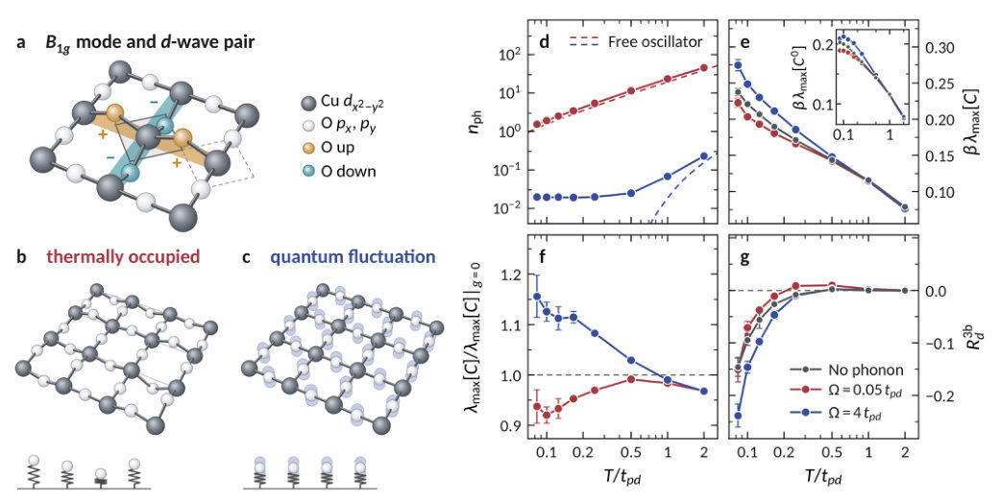
<figcaption class="paper-figure-caption"><b>Fig 1.</b> FIG. 1. Temperature-dependent effects of B1g phonons on superconducting pairing. a, Schematic illustration of the B1g oxygen buckling mode, where oxygen atoms along the x and y directions of a plaquette move in opposite out-of-plane directions. The dashed box indicates a d-wave pair in the CuO2 plane, whose order parameter changes sign under a 90◦rotation. b,c, Schematic illustrations of an adiabatic phonon mode in b, which is thermally populated and exhibits large quasi-static distortions (inset), and an antiadiabatic phonon mode in c, which is dominated by quantum fluctuations around the equilibrium positions. d, DQMC results for the average phonon occupation versus temperature in the 8×8...</figcaption>
</figure>
<figure class="paper-figure-card">
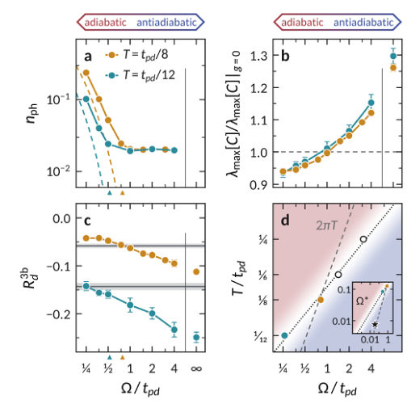
<figcaption class="paper-figure-caption"><b>Fig 2.</b> FIG. 2. Frequency dependence of the B1g phonon ef- fect on d-wave pairing. a, Average phonon occupation nph as a function of phonon frequency. Results are calculated at 1/8 doping for T = tpd/8 and tpd/12. The dashed curves indicate the Bose occupations of independent phonons, while the bottom triangles mark Ω= 2πT for each temperature. b, Relative enhancement or suppression of the pairing sus- ceptibility λmax[C] induced by phonons, compared with the purely electronic model, as a function of phonon frequency. The dashed line indicates unity. c, Pairing vertex ratio R3b d as a function of phonon frequency at the same two temperatures. The gray bars indicate the corresponding vertex ratios...</figcaption>
</figure>
<figure class="paper-figure-card">
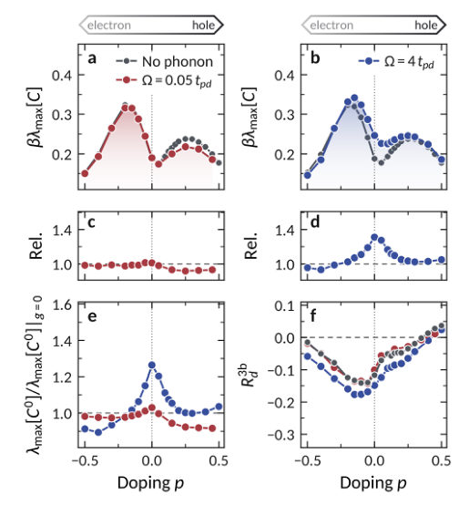
<figcaption class="paper-figure-caption"><b>Fig 3.</b> FIG. 3. Doping dependence of the B1g phonon effects. a,b, Doping dependence of the midpoint pairing correlation βλmax[C] for the purely electronic model (gray) and the mod- els coupled to adiabatic phonons (red, Ω= 0.05tpd) in a and antiadiabatic phonons (blue, Ω= 4tpd) in b. c,d, Rela- tive enhancement or suppression of the pairing susceptibility λmax[C] induced by the adiabatic phonon in c and the an- tiadiabatic phonon in d, normalized to the purely electronic model. e, The same ratio for the dressed bubble λmax[C0] for both phonons. The dashed lines indicate unity, corresponding to the purely electronic model. f, Doping dependence of the pairing vertex ratio R3b d for the same models,...</figcaption>
</figure>
<figure class="paper-figure-card">
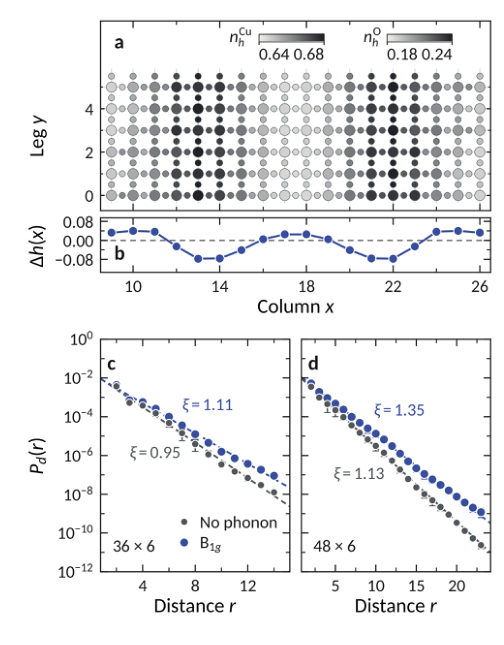
<figcaption class="paper-figure-caption"><b>Fig 4.</b> FIG. 4. Charge stripes and pairing correlations in the ground state. a, Hole-density distribution on Cu and O sites within the middle 18 columns of a 36 × 6 cylinder at hole doping p = 1/12, coupled to an extremely antiadia- batic B1g phonon with Ω→∞and κ = 0.25tpd. The re- sults are obtained at the largest bond dimension reached, re- taining D = 36 000 SU(2) multiplets. b, Difference in the column-resolved hole-density distribution, ∆h(x), relative to the purely electronic model, exhibiting a modulation oppo- site to the static hole-density distribution. c,d, Static d-wave pairing correlation Pd(r) on Cu sites as a function of distance r for the 36 × 6 cylinder in c and the 48 × 6 cylinder...</figcaption>
</figure>
</div>
<p><strong>Summary.</strong> This work investigates how B1g phonon fluctuations mediate high-Tc superconductivity in cuprates using a three-band model. It reveals a critical dependence on the phonon regime: adiabatic phonons suppress pairing, whereas antiadiabatic phonons cooperatively enhance d-wave pairing. The findings establish a microscopic mechanism for phonon-mediated pairing enhancement, particularly emphasizing electron-hole asymmetry.</p>
<p><strong>Why it may be interesting.</strong> The explicit comparison between phonon regimes (adiabatic vs. antiadiabatic) provides a detailed, physically motivated mechanism for pairing enhancement, which is highly relevant to understanding how lattice dynamics influence quantum many-body states in strongly correlated systems.</p>
<details>
<summary>Detailed structure</summary>
<p><strong>Main problem.</strong> The paper addresses the outstanding puzzle of the microscopic origin of high-Tc superconductivity in cuprates, focusing specifically on the role of lattice vibrations (phonons).</p>
<p><strong>Main result.</strong> The B1g phonon exhibits opposite roles depending on the phonon regime: it suppresses pairing in the adiabatic regime but substantially enhances d-wave pairing in the antiadiabatic regime.</p>
<p><strong>Method.</strong> The study employs theoretical simulations, including Determinant Quantum Monte Carlo (DQMC) and Density-Matrix Renormalization Group (DMRG) calculations, to analyze pairing correlations.</p>
<p><strong>Model / system.</strong> The system is modeled using a three-band cuprate Emery model, incorporating an electron-phonon coupling term involving the B1g oxygen buckling mode. The analysis compares the behavior in the adiabatic ($\Omega \ll 2\pi T$) versus antiadiabatic ($\Omega \gg 2\pi T$) phonon regimes.</p>
<p><strong>Key observables.</strong> Dynamical Cu–Cu d-wave pairing correlator ($P_d(	au)$), largest eigenvalue characterizing pairing response ($\lambda_{\max}[C]$), and the pairing vertex ratio ($R_{3b/d}$).</p>
<p><strong>Important parameters / regimes.</strong> Doping ($p=1/8$), phonon frequency ($\Omega$), and temperature ($T$). The analysis hinges on the crossover between adiabatic and antiadiabatic phonon coupling.</p>
<p><strong>Assumptions / limitations.</strong> The primary assumption is that the B1g phonon mode is the crucial mediator, and the analysis relies on distinguishing between the temperature-dependent regimes of phonon coupling.</p>
<p><strong>Figures summary.</strong> Figures illustrate the temperature dependence of pairing correlations in both adiabatic and antiadiabatic regimes, comparing results to purely electronic models. They also show the doping dependence and the enhancement of static d-wave pairing correlations.</p>
<p><strong>Paper structure.</strong> The paper develops its argument by first establishing the theoretical framework using the three-band model and phonon coupling. It then contrasts the effects of the adiabatic and antiadiabatic phonon regimes on pairing, concluding with detailed analyses of doping asymmetry and the resulting enhancement of superconducting correlations.</p>
</details>
<details>
<summary>Abstract</summary>
<p>The microscopic origin of high-$T_c$ superconductivity in cuprates remains an outstanding puzzle due to the interplay of intertwined orders. Experimental observations and theoretical studies have suggested crucial roles of phonons, with the $B_{1g}$ oxygen buckling mode emerging as a promising candidate. Here, we investigate the microscopic influence of this phonon in a three-band cuprate model. We find that the $B_{1g}$ phonon plays opposite roles in superconductivity depending on whether it lies in the adiabatic or antiadiabatic regime at a given temperature. Thermally populated adiabatic phonons suppress $d$-wave pairing through the loss of quasiparticle coherence, whereas antiadiabatic phonons simultaneously enhance coherence and the attractive $d$-wave pairing vertex, strengthening superconductivity across multiple diagnostics. This enhancement also exhibits pronounced electron-hole asymmetry arising from the different orbital characters of doped carriers. Our results therefore establish a microscopic mechanism through which $B_{1g}$ phonons can cooperate with electronic correlations to substantially enhance $d$-wave superconducting pairing in cuprates.</p>
</details>
<p><sub><a href="#top">↑ back to top</a></sub></p>

<p><a id="paper-2610.40459"></a></p>
<h3 id="quantum-walk-inspired-spectral-metrics-for-evaluating-qaoa-mixers"><a href="http://arxiv.org/abs/2610.40459v1">Quantum-Walk Inspired Spectral Metrics for Evaluating QAOA Mixers</a></h3>
<p><strong>Authors:</strong> Jasjyot Singh Gulati, Tharrmashastha SAPV<br>
<strong>Type:</strong> theory · <strong>Category:</strong> quantum information and computing · <strong>PDF:</strong> <a href="https://arxiv.org/pdf/2610.40459v1">https://arxiv.org/pdf/2610.40459v1</a><br>
<strong>Analysis basis:</strong> full PDF text, analyzed in chunks</p>
<div class="figure-strip-hint">↔ Scroll figures horizontally</div>
<div class="paper-figures-scroll">
<figure class="paper-figure-card">
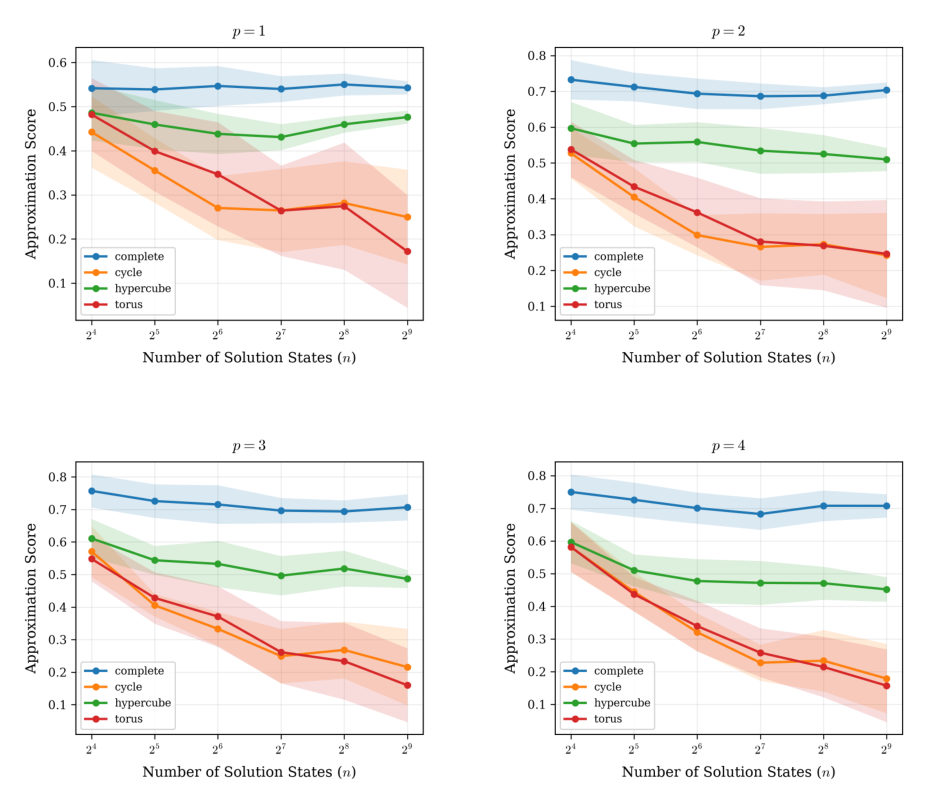
<figcaption class="paper-figure-caption"><b>Fig 1.</b> Figure 1: Mean approximation score r as a function of the solution-space size N = 2q, shown separately for QAOA depths p = 1, . . . , 4, on the permutation-invariant random-energy ensem- ble. Shaded regions indicate one standard deviation over the 20 instances.</figcaption>
</figure>
<figure class="paper-figure-card">

<figcaption class="paper-figure-caption"><b>Fig 2.</b> Figure 2: Mean approximation score r as a function of QAOA depth p, shown separately for each solution-space size N = 2q, on the permutation-invariant random-energy ensemble. Shaded regions indicate one standard deviation over the 20 instances.</figcaption>
</figure>
<figure class="paper-figure-card">

<figcaption class="paper-figure-caption"><b>Fig 3.</b> Figure 3: QAOA performance on the structured 1-D Ising instances. The upper panels show the mean approximation score as a function of solution-space size N = 2q for each depth p, while the lower panels show its dependence on p for fixed N. Shaded regions indicate one standard deviation over the 20 instances.</figcaption>
</figure>
<figure class="paper-figure-card">

<figcaption class="paper-figure-caption"><b>Fig 4.</b> Figure 4: QAOA performance on the structured 2-D Ising instances. The upper panels show the mean approximation score as a function of solution-space size N = 2q for each depth p, while the lower panels show its dependence on p for fixed N. Shaded regions indicate one standard deviation over the 20 instances.</figcaption>
</figure>
</div>
<p><strong>Summary.</strong> This paper introduces spectral metrics derived from quantum-walk theory to characterize the mixing properties of Hamiltonians used in QAOA. The authors show these metrics are useful for unstructured problems but fail to predict performance when the cost Hamiltonian has exploitable structure, highlighting the necessity of considering the alignment between the mixer and the cost landscape.</p>
<p><strong>Why it may be interesting.</strong> This work directly addresses the practical challenge of optimizing quantum circuit parameters by providing quantifiable, graph-theoretic metrics to guide the selection of components (mixers) in variational quantum algorithms like QAOA.</p>
<details>
<summary>Detailed structure</summary>
<p><strong>Main problem.</strong> The paper aims to develop graph-topology-aware criteria to select optimal mixer Hamiltonians for the Quantum Approximate Optimization Algorithm (QAOA), moving beyond conventional or implementation-based choices.</p>
<p><strong>Main result.</strong> While spectral metrics successfully characterize mixer topologies for random cost landscapes, they fail when the cost Hamiltonian has exploitable structure, indicating that mixer-cost alignment is crucial for performance.</p>
<p><strong>Method.</strong> The authors propose two spectral heuristics—based on minimum eigenvalue separation of the mixer Hamiltonian ($  ext{H}_M$) and its unitary evolution ($    ext{U}_M$)—and test them against empirical QAOA performance on various graph structures and cost models.</p>
<p><strong>Model / system.</strong> The study focuses on the QAOA algorithm applied to binary optimization problems. The system involves a cost Hamiltonian ($  ext{H}_C$) and a mixer Hamiltonian ($    ext{H}_M$), where $ ext{H}_M$ is derived from the adjacency matrix of a graph (e.g., complete graph, hypercube, cycle).</p>
<p><strong>Key observables.</strong> Normalized minimum eigenvalue separation ($\epsilon_{\Delta 	ext{H}_M}$), long-time averaged minimum unitary eigenvalue separation ($\delta_\infty(	ext{H}_M)$), and the QAOA approximation score ($r$).</p>
<p><strong>Important parameters / regimes.</strong> The depth of QAOA ($p$), the size of the graph ($N$), and the structure of the cost Hamiltonian (random-energy ensemble vs. structured Ising QUBOs).</p>
<p><strong>Assumptions / limitations.</strong> The spectral metrics are heuristic indicators of mixer dynamics and are not proven to be rigorous mixing-time bounds for QAOA. The predictive power is limited when the cost Hamiltonian structure is non-random.</p>
<p><strong>Figures summary.</strong> Figures show the mean approximation score ($r$) versus size ($N$) for random-energy ensembles, demonstrating spectral consistency, and versus size/depth for structured Ising instances, showing spectral ordering breakdown.</p>
<p><strong>Paper structure.</strong> The paper introduces the problem of mixer selection, proposes two spectral metrics derived from quantum-walk theory, derives these metrics for canonical topologies, and then empirically compares the resulting spectral ordering against QAOA performance on both random and structured cost Hamiltonians.</p>
</details>
<details>
<summary>Abstract</summary>
<p>QAOA mixers play an important role in enabling exploration of the exponentially large solution space of binary optimization problems. However, the choice of mixer Hamiltonian is typically guided by convention and implementation or circuit constraints, rather than by a graph-topology-aware criterion. In this work, inspired by quantum-walk mixing theory, we propose two complementary spectral heuristics for characterizing QAOA mixer topologies. The first is the normalized minimum eigenvalue separation of the mixer Hamiltonian $H_M$, while the second is the long-time averaged minimum eigenvalue separation of the mixer unitary $U_M(β)=e^{-iβH_M}$. Both quantities are invariant under any positive rescaling of the mixer Hamiltonian and provide Hamiltonian- and unitary-level characterizations of the mixer's spectral structure. We use them as heuristic indicators of the mixer dynamics relevant to amplitude redistribution during QAOA evolution.   We derive exact expressions and asymptotic bounds for the complete graph, hypercube, cycle, and balanced 2-D torus, revealing a broad spectral separation between the studied topology classes. We then compare these separations with empirical QAOA performance. For random permutation-invariant cost Hamiltonians, the observed performance ordering is broadly consistent with the spectral characterization. In contrast, for structured 1-D and 2-D Ising QUBOs, this ordering breaks down, indicating that mixer-cost alignment can become important. These results illustrate both the usefulness and the limitations of topology-level, cost-agnostic spectral heuristics for QAOA mixer selection.</p>
</details>
<p><sub><a href="#top">↑ back to top</a></sub></p>

<p><a id="paper-2610.39129"></a></p>
<h3 id="reverse-quantum-annealing-for-ground-state-energy-calculation-in-molecule"><a href="http://arxiv.org/abs/2610.39129v1">Reverse Quantum Annealing for Ground-State Energy Calculation in Molecule</a></h3>
<p><strong>Authors:</strong> Pradyot Pritam Sahoo<br>
<strong>Type:</strong> theory · <strong>Category:</strong> other · <strong>PDF:</strong> <a href="https://arxiv.org/pdf/2610.39129v1">https://arxiv.org/pdf/2610.39129v1</a><br>
<strong>Analysis basis:</strong> full PDF text, analyzed in chunks</p>
<div class="figure-strip-hint">↔ Scroll figures horizontally</div>
<div class="paper-figures-scroll">
<figure class="paper-figure-card">

<figcaption class="paper-figure-caption"><b>Fig 1.</b> Figure 1. Twelve reverse-annealing schedules evaluated in this work: (a) Pause schedules (S1–S5) with dwell intervals of 10, 25, and 40 µs at intermediate reversal points s′ ∈{0.35, 0.50, 0.65}; (b) V-shaped schedules (S6–S12) with a fixed total anneal time of 20 µs and reversal depths ranging from s′ = 0.35 to s′ = 0.65.</figcaption>
</figure>
<figure class="paper-figure-card">

<figcaption class="paper-figure-caption"><b>Fig 2.</b> Figure 2. Computational architecture of the reverse-QAE algorithm. Left: Workflow schematic detailing the transformation from the relativistic Dirac–Coulomb Hamiltonian to the partitioned QUBO, forward annealing, multi-schedule reverse annealing, and continuous post-processing. Right: Algorithmic procedure executed across the normalization multiplier λ to obtain the variational ground-state energy.</figcaption>
</figure>
<figure class="paper-figure-card">

<figcaption class="paper-figure-caption"><b>Fig 3.</b> Figure 3. Schedule-dependent RQA performance for (a) (3e, 8o) and (b) (7e, 14o) active spaces. Schedules are ordered monotonically from greatest average energy lowering to zero. Data points denote the mean signed relative energy change ∆E = (ERA −EFA)/|EFA| × 100, and error bars denote the standard deviation (±1σ) across the five molecular radicals. Sched- ule S11 (s′ = 0.40) achieves the highest mean energy lowering in both active spaces.</figcaption>
</figure>
<figure class="paper-figure-card">

<figcaption class="paper-figure-caption"><b>Fig 4.</b> Figure 4. Molecule-averaged signed RQA energy change for (a) (3e, 8o) and (b) (7e, 14o) active spaces. Negative values denote variational energy lowering relative to the forward-annealing baseline. Error bars indicate the standard deviation across the twelve reverse-annealing schedules.</figcaption>
</figure>
<figure class="paper-figure-card">

<figcaption class="paper-figure-caption"><b>Fig 5.</b> Figure 5. Benchmark of residual ground-state energy errors |E −EFCI| (in milliHartrees, logarithmic scale) relative to exact Full Configuration Interaction (FCI) for (a) (3e, 8o) and (b) (7e, 14o) active spaces. Forward annealing (FA, slate bars) leaves substantial residual configuration errors, whereas optimal reverse annealing (RA, colored bars) dramatically reduces the error by 82.3% to 98.1%, reaching sub-milliHartree chemical accuracy (&lt; 1.594 mHa = 1.0 kcal/mol, dashed orange line) for BeF and SrF.</figcaption>
</figure>
</div>
<p><strong>Summary.</strong> This paper presents a method using Reverse Quantum Annealing (RQA) to calculate highly accurate ground-state energies for alkaline-earth monofluorides. By refining results from standard Quantum Annealing (FA) using optimized reversal schedules, the authors significantly reduce computational errors. This work advances the feasibility of using quantum annealers for high-precision molecular electronic structure calculations.</p>
<p><strong>Why it may be interesting.</strong> This work directly tackles the computational bottleneck in molecular electronic structure theory by demonstrating a quantum algorithm refinement (RQA) that pushes quantum annealers toward chemical accuracy for complex molecular systems.</p>
<details>
<summary>Detailed structure</summary>
<p><strong>Main problem.</strong> The primary goal is to calculate the ground-state electronic energies of alkaline-earth monofluoride molecules with high chemical accuracy.</p>
<p><strong>Main result.</strong> Reverse Quantum Annealing (RQA) systematically reduces residual errors from Forward Annealing (FA) by 82.3% to 98.1%, achieving sub-milliHartree accuracy when benchmarked against exact Full Configuration Interaction (FCI) results.</p>
<p><strong>Method.</strong> The study employs a hybrid quantum-classical approach, using the Quantum Annealing Eigensolver (QAE) algorithm refined by optimizing twelve different reverse-annealing schedules.</p>
<p><strong>Model / system.</strong> The system involves calculating the relativistic Dirac-Coulomb electronic Hamiltonian for molecules like BeF, MgF, CaF, SrF, and BaF. Calculations are performed in two active spaces: (3e, 8o) and (7e, 14o).</p>
<p><strong>Key observables.</strong> Signed relative energy change ($\Delta E$), residual error ($\delta$) in milliHartrees (mHa), and the improvement metric ($\eta$) quantifying error reduction.</p>
<p><strong>Important parameters / regimes.</strong> The performance is highly dependent on the chosen reversal depth ($s'$) and the specific annealing schedule ($S1-S12$), with optimal regimes found around $s' \approx 0.35-0.45$.</p>
<p><strong>Assumptions / limitations.</strong> The full QUBO is partitioned into smaller sub-QUBOs due to hardware constraints, and the final results are benchmarked against exact FCI diagonalization.</p>
<p><strong>Figures summary.</strong> Figures illustrate the energy profiles across the 12 tested annealing schedules for both the (3e, 8o) and (7e, 14o) active spaces, comparing FA, RA, and the FCI reference energy.</p>
<p><strong>Paper structure.</strong> The paper details the mapping of the electronic Hamiltonian to a QUBO, describes the 8-step RQA protocol involving sub-QUBO partitioning and schedule application, and presents comparative results across different molecules and active spaces.</p>
</details>
<details>
<summary>Abstract</summary>
<p>We present the results of our reverse quantum annealing computations of the ground-state energies of alkaline-earth monofluoride molecules. By partitioning the Dirac--Coulomb electronic Hamiltonian into sub-QUBOs and refining forward-annealing solutions through optimized reverse-annealing schedules, residual configuration errors are systematically minimized. The electronic ground-state wave functions and energies are obtained using the Quantum Annealing Eigensolver algorithm. This work provides a pathway for achieving sub-milliHartree chemical accuracy and advancing molecular electronic structure calculations in the quantum annealing paradigm.</p>
</details>
<p><sub><a href="#top">↑ back to top</a></sub></p>

<p><a id="paper-2610.38701"></a></p>
<h3 id="sample-based-quantum-diagonalization-for-variable-molecular-geometries"><a href="http://arxiv.org/abs/2610.38701v1">Sample-Based Quantum Diagonalization for Variable Molecular Geometries</a></h3>
<p><strong>Authors:</strong> Matthieu Fortin-Deschenes, Ibrahim Shehzad<br>
<strong>Type:</strong> both · <strong>Category:</strong> strongly correlated electrons · <strong>PDF:</strong> <a href="https://arxiv.org/pdf/2610.38701v1">https://arxiv.org/pdf/2610.38701v1</a><br>
<strong>Analysis basis:</strong> full PDF text, analyzed in chunks</p>
<div class="figure-strip-hint">↔ Scroll figures horizontally</div>
<div class="paper-figures-scroll">
<figure class="paper-figure-card">

<figcaption class="paper-figure-caption"><b>Fig 1.</b> Figure 1 Schematic of the VGSQD algorithm. (a) VGSQD workflow: LUCJ circuit sampling on the QPU for the reference molecule, subspace diagonalization on HPC and geometry update. (b) Alignment of the MOs of the distorted molecule to those of the reference (MO overlap matrix before and after alignment). If the alignment and displacement criteria are satisfied, SQD is carried out with the reference bitstrings (red path); otherwise a new reference is defined and re-sampled on the QPU (blue path).</figcaption>
</figure>
<figure class="paper-figure-card">

<figcaption class="paper-figure-caption"><b>Fig 2.</b> Figure 2 (a, b) Qubit layouts of LUCJ circuits of Be2 with the cc-pVDZ (a) and cc-pVTZ (b) basis sets. Qubits used to encode the occupation numbers of α (β) spin orbitals are shown in red (blue). Ancilla qubits mediating the density–density interactions between opposite spin are shown in green. (c, d) SQD energy convergence vs. iteration of the configuration recovery procedure for Be2 with the cc-pVDZ basis set at bond length of 2.564 Å (c) and cc-pVTZ basis set at bond length of 2.385 Å (d), with comparison to classical methods.</figcaption>
</figure>
<figure class="paper-figure-card">

<figcaption class="paper-figure-caption"><b>Fig 3.</b> Figure 3 VGSQD geometry optimization of Be2 with the cc-pVDZ basis set. (a, b) SQD energy (a) and gradient norm (b) vs. iteration, with the bond length shown on the right axis. (c) MO misalignment δalign and CI infidelity δCI vs. iteration; the horizontal dashed line indicates ϵalign. The vertical dashed lines in (a–c) mark the re-sampling on the QPU. (d–f) Cross-geometry MO overlap matrix between the reference (2.460 Å) and iteration 4 (2.544 Å) geometries before alignment (d), after alignment (e) and after re-sampling on the QPU (f). (g) Optimized bond length with comparison to classical methods and experiment.</figcaption>
</figure>
<figure class="paper-figure-card">

<figcaption class="paper-figure-caption"><b>Fig 4.</b> Figure 4 Minimum energy path of the H2 + H →H + H2 reaction obtained with VGSQD and CI-NEB (cc-pVTZ). (a) Energy of the NEB images relative to the reactants vs. normalized path length, with the transition state circled. (b) Projection of the path onto the r(Ha–Hb) and r(Hb–Hc) coordinates.</figcaption>
</figure>
<figure class="paper-figure-card">

<figcaption class="paper-figure-caption"><b>Fig 5.</b> Figure 5 Gradient convergence for the VGSQD geometry optimization of H2O with (a) the cc-pVDZ basis set and (b) cc-pVTZ basis set.</figcaption>
</figure>
</div>
<p><strong>Summary.</strong> This paper presents VGSQD, a novel quantum algorithm that efficiently calculates molecular properties at varying geometries by reusing quantum samples from a known reference structure. By applying this to $ ext{Be}_2$, $   ext{H}_2    ext{O}$, and chemical reactions, the authors demonstrate that quantum computation can achieve accuracy comparable to leading classical methods for geometry optimization and reaction path mapping.</p>
<p><strong>Why it may be interesting.</strong> This work bridges the gap between quantum simulation algorithms and practical chemical physics problems, showing how quantum resources can be efficiently scaled to map out complex potential energy surfaces essential for understanding chemical dynamics.</p>
<details>
<summary>Detailed structure</summary>
<p><strong>Main problem.</strong> The primary challenge is extending quantum computational methods to accurately calculate molecular properties across variable geometries, which is crucial for studying chemical reactions and structural relaxation.</p>
<p><strong>Main result.</strong> The Variable Geometry Sample-Based Quantum Diagonalization (VGSQD) algorithm successfully determined the equilibrium geometry and energy for molecules like $  ext{Be}_2$ and $    ext{H}_2    ext{O}$, and computed reaction barriers comparable to state-of-the-art classical methods.</p>
<p><strong>Method.</strong> The authors introduce VGSQD, an extension of Sample-Based Quantum Diagonalization (SQD) that reuses quantum samples from a reference geometry to drastically reduce the quantum computational cost when calculating properties at slightly displaced molecular geometries.</p>
<p><strong>Model / system.</strong> The work focuses on quantum chemistry calculations for molecular systems, specifically testing on the beryllium dimer ($    ext{Be}_2$) and water ($   ext{H}_2    ext{O}$), and extending to reaction pathways like $ ext{H}_2 +  ext{H}$. The electronic Hamiltonian is treated using the Born-Oppenheimer approximation.</p>
<p><strong>Key observables.</strong> Equilibrium geometry and energy, Minimum Energy Path (MEP), energy barrier of chemical reactions, and MO overlap matrices.</p>
<p><strong>Important parameters / regimes.</strong> Basis sets include $    ext{cc-pVDZ}$ and $ ext{cc-pVTZ}$; the method is tested on qubits up to 124 on an IBM Heron r2 processor.</p>
<p><strong>Assumptions / limitations.</strong> The Born-Oppenheimer approximation is used, and the core assumption for VGSQD is that reusing quantum samples from a reference geometry is justified when the target geometry is close to the reference.</p>
<p><strong>Figures summary.</strong> Figures illustrate the VGSQD workflow, convergence of energy/forces during geometry optimization (e.g., for $  ext{H}_2    ext{O}$), and the convergence of the CI-NEB calculation for a hydrogen exchange reaction.</p>
<p><strong>Paper structure.</strong> The paper introduces VGSQD to address the high cost of quantum calculations at varying geometries. It details the application to molecular structure optimization ($   ext{Be}_2$, $   ext{H}_2    ext{O}$), followed by extending the methodology to map out chemical reaction pathways and energy barriers.</p>
</details>
<details>
<summary>Abstract</summary>
<p>Quantum and hybrid quantum-classical algorithms have the potential to improve the accuracy and scale of quantum chemistry and impact a broad range of applications such as drug discovery and catalysis. In particular, subspace methods such as sample-based quantum diagonalization (SQD) can already tackle classically challenging systems. However, practical algorithms that go beyond the computation of electronic ground and excited states are still scarce. Here, we introduce the variable-geometry sample-based quantum diagonalization (VGSQD) algorithm, which extends SQD to variable molecular geometries by reusing quantum samples from a reference geometry at displaced ones, thus significantly reducing quantum computational cost. Using circuits of up to 124 qubits on ibm-quebec, an IBM Heron r2 quantum processor, we determine the equilibrium geometry and energy of the weakly bound, strongly correlated beryllium dimer, as well as the water molecule. Finally, we extend VGSQD to chemical reactions and compute the minimum energy path and energy barrier of a hydrogen exchange reaction. The results are comparable with state-of-the-art classical methods such as CCSD(T) and DMRG. This work broadens the scope of quantum algorithms for chemistry, from energies to geometry optimization and reaction pathways, both essential for practical applications.</p>
</details>
<p><sub><a href="#top">↑ back to top</a></sub></p>

<p><a id="paper-2610.38959"></a></p>
<h3 id="separating-the-density-wave-phase-from-zero-resistance-superconductivity-in-lamath1579mathnimath1580mathomath1581math"><a href="http://arxiv.org/abs/2610.38959v1">Separating the Density Wave Phase from Zero-Resistance Superconductivity in La$_4$Ni$_3$O$_{10}$</a></h3>
<p><strong>Authors:</strong> P. Puphal, A. Suthar, B. Wehinger, V. Sundaramurthy, T. Priessnitz, M. Knauft, P. Sosa-Lizama, Y. -M. Wu, M. Hepting, J. Nuss, M. Isobe, P. A. van Aken, Y. E. Suyolcu, B. Keimer, H. Takagi, P. Reiss<br>
<strong>Type:</strong> experiment · <strong>Category:</strong> strongly correlated electrons · <strong>PDF:</strong> <a href="https://arxiv.org/pdf/2610.38959v1">https://arxiv.org/pdf/2610.38959v1</a><br>
<strong>Analysis basis:</strong> full PDF text, analyzed in chunks</p>
<div class="figure-strip-hint">↔ Scroll figures horizontally</div>
<div class="paper-figures-scroll">
<figure class="paper-figure-card">

<figcaption class="paper-figure-caption"><b>Fig 1.</b> Figure 1(a) shows the result of our scanning transmission electron microscopy experiments which clearly resolve the perovskite blocks formed out of four layers of La atoms with three layers of NiO6 octahedra sandwiched in-between. These blocks are stacked vertically and are separated by a horizontal, in-plane shift, defining the rock salt layer at the interface. Our results reveal an outstanding crystallinity with long-range ordering of La4Ni3O10 trilayers only, without any evidence of stacking disorder or intergrowth of other Ruddlesden-Popper phases8–11. The high quality of our single crystals is further sup-</figcaption>
</figure>
<figure class="paper-figure-card">

<figcaption class="paper-figure-caption"><b>Fig 2.</b> Figure 1. Ambient pressure properties of La4Ni3O10. (a) Wide view/close up high-angle annular dark-field scanning transmission electron microscopy of La4Ni3O10−x single crystal. The overlay show the monoclinic unit cell featuring perovskite layers formed out of NiO6 octahedra and La layers, separated by rock salt layers. (b) In-plane and (c) out-of-plane electrical resistivities. The density wave transition temperature TDW is highlighted by a vertical dashed line. The inset to (c) shows the temperature dependence of the anisotropy ratio γ.</figcaption>
</figure>
<figure class="paper-figure-card">

<figcaption class="paper-figure-caption"><b>Fig 3.</b> Figure 2. Density wave formation and superconductivity in La4Ni3O10 under different pressure environments. (a) Under (pseudo-) hydrostatic conditions, the density wave phase is suppressed at a rate of approximately −9 K/GPa. (b) Under dominant out-of-plane compression, the density wave phase is suppressed more slowly, which appears highly consistent with the existing literature. Incomplete superconductivity is observed above ≈15−20 GPa, and zero-resistance is observed above 40 GPa only. (c) In contrast, under enhanced in-plane compression, the density wave phase is suppressed much faster at a rate of approximately −18 K/GPa, and we observe a zero-resistance state above ≈17 GPa already. (d)...</figcaption>
</figure>
<figure class="paper-figure-card">

<figcaption class="paper-figure-caption"><b>Fig 4.</b> Figure 3. High-pressure transport properties of La4Ni3O10 under various pressure environments. (a,d) Temperature and pressure dependent resistances under dominant out-of-plane compression for runs #1 and #2. (b,e) Zoom into the low-temperature resistance downturns signalling the onset of superconductivity. (c) Sample picture showing the strong expansion of the gasket hole and sample under pressure of run #1, corresponding to a substantial out-of-plane compression. (f) Temperature and pressure dependent resistance under enhanced in-plane compression. (g,h) Zoom into the low-temperature resistance featuring a reproducible zero-resistance transition between runs #4 and #5.</figcaption>
</figure>
<figure class="paper-figure-card">

<figcaption class="paper-figure-caption"><b>Fig 5.</b> Figure 4. Structural properties under pressure. (a,b) Reconstructed reciprocal space maps measured by XRD under various pressures set up either (a) for isotropic compression using helium as PTM or a (b) for enhanced in-plane compression. Horizontal arrows mark reflections whose (dis)appearance define structural phase boundaries. (c, d) Normalised integrated peak intensities. (e) Pressure dependence of the cross section of the unit cell within the ab plane, normalised for either pressure environment against their low-pressure values. In panels (c-e), vertical dashed lines indicate structural phase transitions between the indicated space groups. In all panels, the indexation corresponds to...</figcaption>
</figure>
</div>
<p><strong>Summary.</strong> This experimental study investigates the complex phase diagram of the nickelate $  ext{La}<em 10>4   ext{Ni}_3   ext{O}</em>$ under high pressure. By applying controlled, anisotropic strain, the researchers successfully separated the density wave phase from superconductivity. They demonstrate that in-plane compression is a powerful tool, significantly lowering the pressure required to induce zero-resistance superconductivity.</p>
<p><strong>Why it may be interesting.</strong> This work directly probes the interplay between competing electronic orders (CDW/DW) and superconductivity in strongly correlated nickelates, a canonical problem in condensed matter physics relevant to high-Tc superconductivity.</p>
<details>
<summary>Detailed structure</summary>
<p><strong>Main problem.</strong> The central challenge is to identify the key physical ingredients governing superconductivity in Ruddlesden-Popper nickelates, specifically separating the influence of structural variations, oxygen content, and competing electronic orders like Density Waves (DW).</p>
<p><strong>Main result.</strong> The study successfully separated the low-pressure DW phase from superconductivity and found that applying enhanced biaxial, in-plane compressive pressures significantly lowers the required pressure to achieve zero resistance by 60% compared to prior reports.</p>
<p><strong>Method.</strong> The research employed high-pressure electronic transport measurements (resistivity) using single crystals, complemented by high-pressure X-ray Diffraction (XRD) to track structural changes under different compression regimes.</p>
<p><strong>Model / system.</strong> The physical system is the trilayer nickelate $ ext{La}<em 10>4   ext{Ni}_3   ext{O}</em>$, which is studied under extreme conditions using diamond anvil cells (DACs) to apply controlled, non-hydrostatic pressures.</p>
<p><strong>Key observables.</strong> Zero-resistance state ($T_c^0$), Density Wave transition temperature ($T_{	ext{DW}}$), resistivity anisotropy ($
ho_{zz}/
ho_{ab}$), and lattice parameters.</p>
<p><strong>Important parameters / regimes.</strong> Pressure (especially the difference between isotropic, out-of-plane, and enhanced in-plane compression), and temperature.</p>
<p><strong>Assumptions / limitations.</strong> The authors assume that the observed differences in superconducting pressure dependence are due to the specific type of applied stress (biaxial in-plane vs. out-of-plane).</p>
<p><strong>Figures summary.</strong> Figures illustrate the phase diagrams showing the separation of DW and superconducting regions under varying pressure environments, and show transport measurements ($R$ vs $T$ and $R$ vs $p$) for different compression types.</p>
<p><strong>Paper structure.</strong> The paper systematically compares transport measurements under different pressure environments (pseudo-hydrostatic, out-of-plane, in-plane) to disentangle the competing electronic orders (DW vs. SC) and establish the role of anisotropic strain.</p>
</details>
<details>
<summary>Abstract</summary>
<p>Identifying the key ingredients for superconductivity under pressure in the Ruddlesden-Popper nickelates remains a formidable challenge, due to a complex interplay between structural variations, oxygen content and location, electronically ordered phases, and the need for high pressures to reach the superconducting phase. To disentangle these complex inter-dependencies, here we study a series of clean single crystals of trilayer La$_4$Ni$_3$O$_{10}$. We discover that enhanced biaxial, compressive pressures induce a zero-resistance state at a 60\% lower pressure compared to previous reports. At the same time, we completely separate the low-pressure density wave phase from superconductivity, effectively ruling out that soft, quantum critical fluctuations of the density wave order parameter act as the pairing glue in this system. Our results establish biaxial, in-plane pressures as a powerful tool for promoting superconductivity in nickelates, unifying the required pressure scales for superconductivity in different Ruddlesden-Popper structures, and providing a connection to the recently discovered thin film samples.</p>
</details>
<p><sub><a href="#top">↑ back to top</a></sub></p>

<p><a id="paper-2610.39476"></a></p>
<h3 id="sequencedqc-full-stack-simulation-of-distributed-quantum-computing"><a href="http://arxiv.org/abs/2610.39476v1">SeQUeNCe.DQC: Full-stack Simulation of Distributed Quantum Computing</a></h3>
<p><strong>Authors:</strong> Sanjay Suresh, Caitao Zhan, Joaquin Chung, Rajkumar Kettimuthu<br>
<strong>Type:</strong> both · <strong>Category:</strong> quantum information and computing · <strong>PDF:</strong> <a href="https://arxiv.org/pdf/2610.39476v1">https://arxiv.org/pdf/2610.39476v1</a><br>
<strong>Analysis basis:</strong> full PDF text, analyzed in chunks</p>
<div class="figure-strip-hint">↔ Scroll figures horizontally</div>
<div class="paper-figures-scroll">
<figure class="paper-figure-card">

<figcaption class="paper-figure-caption"><b>Fig 1.</b> Fig. 2. SeQUeNCe.DQC execution workflow. The compiler produces a CompiledProgram; the controller tracks qubit locations and dispatches operations to per-node WorkerPrograms.</figcaption>
</figure>
<figure class="paper-figure-card">

<figcaption class="paper-figure-caption"><b>Fig 2.</b> Fig. 1. Modular architecture of SeQUeNCe.DQC. Light-gray boxes represent existing SeQUeNCe modules; blue boxes highlight new modules added to enable full-stack DQC simulation.</figcaption>
</figure>
<figure class="paper-figure-card">

<figcaption class="paper-figure-caption"><b>Fig 3.</b> Fig. 3. Two-node distributed Grover validation. Per-marked-state success probability for the noiseless baseline (100%) and the full detailed error model (73.8% avg). The dashed line represents the measured 71% average from Main et al. [6].</figcaption>
</figure>
<figure class="paper-figure-card">

<figcaption class="paper-figure-caption"><b>Fig 4.</b> Fig. 4. Distributed Grover (n=6) success probability versus hardware quality z (Table IV), linking physical device noise directly to algorithmic outcome.</figcaption>
</figure>
<figure class="paper-figure-card">

<figcaption class="paper-figure-caption"><b>Fig 5.</b> Fig. 5. Execution time and Grover’s success probability of eight compilations of the same 2-node Grover (n=4). Bars annotate success at z=0.95.</figcaption>
</figure>
</div>
<p><strong>Summary.</strong> This paper introduces SeQUeNCe.DQC, a comprehensive simulator for Distributed Quantum Computing, designed to overcome hardware scale limits. It rigorously tests how compiler choices and network constraints impact performance by simulating complex algorithms like Grover's search. The key finding is that hybrid compilation strategies balancing gate teleportation and data movement yield superior performance compared to single-strategy approaches.</p>
<p><strong>Why it may be interesting.</strong> The rigorous, full-stack simulation approach provides crucial insights into the overheads of physical communication primitives (TELEGATE vs. TELEDATA), which is vital for designing practical, large-scale quantum hardware architectures.</p>
<details>
<summary>Detailed structure</summary>
<p><strong>Main problem.</strong> The paper addresses the challenge of scaling quantum computation by simulating Distributed Quantum Computing (DQC) across multiple interconnected Quantum Processing Units (QPUs). It aims to determine how compilation strategies, network topology, and memory capacity jointly affect execution time and success probability.</p>
<p><strong>Main result.</strong> Hybrid compiler strategies that intelligently trade between remote two-qubit gates (TELEGATE) and physical qubit relocation (TELEDATA) significantly outperform pure gate-teleportation methods, achieving substantial runtime reductions.</p>
<p><strong>Method.</strong> The authors developed and utilized SeQUeNCe.DQC, a full-stack simulator that compiles monolithic circuits into topology-aware execution plans using both density-matrix and ket-vector backends.</p>
<p><strong>Model / system.</strong> The model simulates DQC across multiple DQCNodes, which are connected via quantum links. The framework explicitly models classical control channels and uses primitives like TELEGATE (remote gate) and TELEDATA (qubit movement).</p>
<p><strong>Key observables.</strong> Execution time, success probability (especially for Grover's algorithm), and resource consumption (e.g., Bell-pair usage).</p>
<p><strong>Important parameters / regimes.</strong> Compiler strategy (qap, FGP, etc.), network topology (star, grid, caveman), and memory capacity distribution (balanced vs. skewed).</p>
<p><strong>Assumptions / limitations.</strong> The framework assumes fully connected qubits within each QPU and models classical transmission latencies, though it notes limitations regarding internal topology and fault tolerance.</p>
<p><strong>Figures summary.</strong> Figures illustrate the modular architecture and execution workflow. Specific figures compare performance metrics (time/success) across different compiler strategies, network topologies, and memory allocation schemes for Grover's algorithm.</p>
<p><strong>Paper structure.</strong> The paper introduces the SeQUeNCe.DQC framework, validates it by reproducing a known trapped-ion Grover experiment, and then systematically evaluates the performance impact of compiler choices, network topology, and memory distribution on DQC execution.</p>
</details>
<details>
<summary>Abstract</summary>
<p>Distributed quantum computing (DQC) connects multiple quantum processing units to overcome the scale limits of monolithic hardware. We introduce SeQUeNCe.DQC, a new top-level module within the SeQUeNCe package that compiles monolithic circuits into topology-aware execution plans and coordinates their execution using SeQUeNCe's existing quantum-network modules and protocols. We validate SeQUeNCe.DQC by reproducing a two-node trapped-ion Grover experiment in simulation and comparing success probabilities with the reported 71% benchmark. We then evaluate how compiler strategy, topology, and memory capacity jointly govern distributed circuit execution time and success rate. In these experiments, our hybrid compilers successfully identified mixed TeleGate/TeleData execution plans that outperformed pure gate-teleportation strategies. By capturing the physical overhead of distributed quantum primitives, SeQUeNCe.DQC provides a rigorous platform for co-designing DQC software and hardware architectures.</p>
</details>
<p><sub><a href="#top">↑ back to top</a></sub></p>

<p><a id="paper-2610.39598"></a></p>
<h3 id="sharp-tilting-inequalities"><a href="http://arxiv.org/abs/2610.39598v1">Sharp Tilting Inequalities</a></h3>
<p><strong>Authors:</strong> Hao-Chung Cheng, Po-Chieh Liu<br>
<strong>Type:</strong> theory · <strong>Category:</strong> other · <strong>PDF:</strong> <a href="https://arxiv.org/pdf/2610.39598v1">https://arxiv.org/pdf/2610.39598v1</a><br>
<strong>Analysis basis:</strong> full PDF text, analyzed in chunks</p>
<div class="figure-strip-hint">↔ Scroll figures horizontally</div>
<div class="paper-figures-scroll">
<figure class="paper-figure-card">

<figcaption class="paper-figure-caption"><b>Fig 1.</b> Low-resolution page preview, page 2</figcaption>
</figure>
<figure class="paper-figure-card">

<figcaption class="paper-figure-caption"><b>Fig 2.</b> Low-resolution page preview, page 3</figcaption>
</figure>
<figure class="paper-figure-card">

<figcaption class="paper-figure-caption"><b>Fig 3.</b> Low-resolution page preview, page 4</figcaption>
</figure>
<figure class="paper-figure-card">

<figcaption class="paper-figure-caption"><b>Fig 4.</b> Low-resolution page preview, page 5</figcaption>
</figure>
<figure class="paper-figure-card">

<figcaption class="paper-figure-caption"><b>Fig 5.</b> Low-resolution page preview, page 6</figcaption>
</figure>
</div>
<p><strong>Summary.</strong> This paper derives and proves sharp trace inequalities, known as Sharp Tilting Inequalities, for positive semidefinite operators $A$ and $B$. It employs sophisticated techniques from functional calculus and superoperator theory to extend these results from finite matrices to general unbounded operators on Hilbert spaces. These inequalities are crucial mathematical tools for bounding quantities in quantum information theory and operator theory.</p>
<p><strong>Why it may be interesting.</strong> The rigorous establishment of sharp operator inequalities like this provides fundamental tools for bounding quantum divergences and analyzing entanglement measures in quantum information theory.</p>
<details>
<summary>Detailed structure</summary>
<p><strong>Main problem.</strong> The paper focuses on establishing and extending sharp trace inequalities, specifically 'Sharp Tilting Inequalities,' for positive semidefinite matrices and operators.</p>
<p><strong>Main result.</strong> The core result is the inequality $\operatorname{Tr}\!\left[A\,D\log(A^\alpha+B^\alpha)(B^\alpha)
ight] \le s^s(1-s)^{1-s}\operatorname{Tr}[A^\alphaB^{1-\alpha}]$, which is shown to hold for general trace-class and bounded operators.</p>
<p><strong>Method.</strong> The proof relies heavily on advanced operator calculus, including superoperator representations for directional derivatives of the logarithm and specialized Araki-type estimates for fractional power derivatives.</p>
<p><strong>Model / system.</strong> The mathematical framework involves abstract positive semidefinite matrices $A$ and $B$, which are generalized to self-adjoint operators on a separable Hilbert space. The context is purely mathematical operator theory applied to quantum observables.</p>
<p><strong>Key observables.</strong> The trace $    ext{Tr}[\dots]$ of operator products, particularly mixed traces like $  ext{Tr}[A^\alpha B^{1-\alpha}]$, and the superoperator integral $\int_0^1 \langle \dots 
angle dv$.</p>
<p><strong>Important parameters / regimes.</strong> The exponent $\alpha$, constrained such that $1/2 \le \alpha \le 1$, which defines the parameter $s = (1-\alpha)/\alpha$.</p>
<p><strong>Assumptions / limitations.</strong> Initial results assume $A$ and $B$ are positive semidefinite matrices, with extensions requiring $A$ to be trace-class and $B$ to be bounded operators on a separable Hilbert space.</p>
<p><strong>Paper structure.</strong> The paper develops the argument by first proving the inequality for matrices (Theorem 4), then extending it to the symmetric quotient form (Proposition 5), and finally generalizing both results to the infinite-dimensional setting using spectral calculus and integral definitions (Theorem 6).</p>
</details>
<details>
<summary>Abstract</summary>
<p>For positive semidefinite matrices $A,B$ and $1/2\leα\le1$, we establish $\operatorname{Tr}\!\left[A\,D\log(A^α+B^α)(B^α)\right] \le s^s(1-s)^{1-s}\operatorname{Tr}[A^αB^{1-α}]$, where $s=(1-α)/α$, with the optimal coefficient. The proof uses a superoperator representation of the directional derivative of the logarithm and an Araki-type estimate for the derivative of a fractional power. Both this inequality and its symmetric-quotient counterpart extend to positive trace-class $A$ and positive, possibly unbounded, self-adjoint $B$ on a separable Hilbert space.</p>
</details>
<p><sub><a href="#top">↑ back to top</a></sub></p>

<p><a id="paper-2610.40424"></a></p>
<h3 id="structural-bottlenecks-in-qaoa-mixer-design-transport-and-causal-reach"><a href="http://arxiv.org/abs/2610.40424v1">Structural Bottlenecks in QAOA Mixer Design: Transport and Causal Reach</a></h3>
<p><strong>Authors:</strong> Jasjyot Singh Gulati, Tharrmashastha SAPV<br>
<strong>Type:</strong> theory · <strong>Category:</strong> quantum information and computing · <strong>PDF:</strong> <a href="https://arxiv.org/pdf/2610.40424v1">https://arxiv.org/pdf/2610.40424v1</a><br>
<strong>Analysis basis:</strong> full PDF text, analyzed in chunks</p>
<div class="figure-strip-hint">↔ Scroll figures horizontally</div>
<div class="paper-figures-scroll">
<figure class="paper-figure-card">

<figcaption class="paper-figure-caption"><b>Fig 1.</b> Low-resolution page preview, page 2</figcaption>
</figure>
<figure class="paper-figure-card">

<figcaption class="paper-figure-caption"><b>Fig 2.</b> Low-resolution page preview, page 3</figcaption>
</figure>
<figure class="paper-figure-card">

<figcaption class="paper-figure-caption"><b>Fig 3.</b> Low-resolution page preview, page 4</figcaption>
</figure>
<figure class="paper-figure-card">

<figcaption class="paper-figure-caption"><b>Fig 4.</b> Low-resolution page preview, page 5</figcaption>
</figure>
<figure class="paper-figure-card">

<figcaption class="paper-figure-caption"><b>Fig 5.</b> Low-resolution page preview, page 6</figcaption>
</figure>
</div>
<p><strong>Summary.</strong> This paper rigorously analyzes the structural bottlenecks in QAOA mixer design, identifying configuration-space transport and finite-depth causal reach as key limitations. Using advanced bounding techniques, the authors demonstrate that while structural improvements can be made, achieving optimal performance requires satisfying both structural constraints simultaneously, highlighting the complexity beyond simple connectivity measures.</p>
<p><strong>Why it may be interesting.</strong> This work provides deep theoretical insights into the limitations of quantum algorithms like QAOA by mathematically dissecting the role of connectivity and information flow (transport/reach) within the quantum circuit structure.</p>
<details>
<summary>Detailed structure</summary>
<p><strong>Main problem.</strong> The paper analyzes the structural limitations—specifically configuration-space transport and finite-depth causal reach—that constrain the performance of the mixer unitary in the Quantum Approximate Optimization Algorithm (QAOA).</p>
<p><strong>Main result.</strong> The authors show that while structural capabilities like causal reach can be matched by augmenting the mixer, achieving high performance requires satisfying both structural constraints, as demonstrated by the unequal performance of $X+XX$ versus $X+YY$ augmentations.</p>
<p><strong>Method.</strong> The analysis combines deriving first-order objective bounds using small-parameter expansions (small-$eta$ and small-$\gamma$ regimes) with non-perturbative bounding techniques based on layer-wise $\ell_1$ spreading of the mixer unitary.</p>
<p><strong>Model / system.</strong> The model is the QAOA circuit, which alternates between applying a problem-dependent cost Hamiltonian ($H_C$) and a mixer Hamiltonian ($H_M$). The analysis focuses on the structure of the mixer $U_M(eta)$ and its interaction with the cost structure.</p>
<p><strong>Key observables.</strong> The primary observable is the expectation value of the cost Hamiltonian, $\langle\psi_p| H_C |\psi_p
angle$, and related diagnostics include the graph-Laplacian energy ($E_M$) and the layer-wise $\ell_1$ spreading ($\Lambda$).</p>
<p><strong>Important parameters / regimes.</strong> Key parameters include the circuit depth ($p$), the mixing parameters ($eta, \gamma$), and the structural augmentation type (e.g., $X+XX$ vs. $X+Y Y$).</p>
<p><strong>Assumptions / limitations.</strong> The analysis relies on deriving necessary conditions (bounds) rather than sufficient ones, and it distinguishes between structural capability and guaranteed performance.</p>
<p><strong>Figures summary.</strong> The notes reference a Table 3 comparing numerical results for different mixer types ($ARX$, $ARX+XX$, $ARX+Y Y$) across varying depths ($p=1$ to $p=5$).</p>
<p><strong>Paper structure.</strong> Part I derives first-order objective bounds based on transport limitations, showing equivalence between small-$eta$ and small-$\gamma$ regimes. Part II studies the locality bottleneck by augmenting the mixer, analyzing the causal radius and comparing performance across different augmentation structures.</p>
</details>
<details>
<summary>Abstract</summary>
<p>The choice of mixer is a central design decision in the Quantum Approximate Optimization Algorithm (QAOA), yet different structural limitations of a mixer need not be captured by a single metric. We identify two complementary structural bottlenecks for shallow QAOA: configuration-space transport, which limits how strongly probability can concentrate on high-quality solutions, and finite-depth causal reach, which limits which parts of a problem instance can influence a local objective term. In Part I, we derive first-order mixer-dependent objective bounds in complementary small-$β$ and small-$γ$ regimes. For connected regular mixer graphs, the two leading-order expressions are exactly equivalent through a graph-Laplacian identity and reduce to the same cost-weighted Dirichlet energy. We then derive a non-perturbative upper envelope from the layer-wise $\ell_1$ spreading of the mixer unitary, yielding a cost-distribution-dependent necessary spreading condition for attaining a target approximation ratio. In Part II, we study the locality bottleneck for MaxCut by augmenting the transverse-field mixer with problem-graph-aligned two-local interactions. The resulting $k$-hop construction has causal radius at most $(k+1)p$ at depth $p$; for the $k=1$ architectures studied numerically, this gives radius $2p$. Across cycles, circular ladders, and high-girth regular bipartite graphs, $X{+}XX$ and $X{+}YY$ improve the best-found approximation ratios over the standard $X$ mixer at equal depth, while $X{+}YY$ at depth $p$ comes within about one approximation-ratio point of plain $X$ at depth $2p$ in the reach-matched cases examined. The unequal performance of the equal-reach $XX$ and $YY$ augmentations shows that satisfying a structural capability does not by itself guarantee performance. Together, the results provide complementary structural insights for mixer design.</p>
</details>
<p><sub><a href="#top">↑ back to top</a></sub></p>
<hr>
<p>
<a href="index.html">← Index</a>
 · <a href="papers_08.html">← Previous</a> · <a href="papers_10.html">Next →</a>
</p>
<hr>

</body>
</html>
